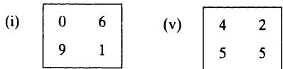

10 比较组别—分类数据 10 Comparing groups - categorical data
10.1 引言 10.1 INTRODUCTION
分类数据在医学研究中非常常见，通常是将个体归入两个或多个互斥的组别之一。在一个样本中，落入某一特定组别的个体数称为频数，因此分类数据的分析就是频数的分析。当比较两个或多个组别时，数据通常以频数表的形式展示。表10.1展示了一个频数表示例—本章后面将用这些数据来说明一种分析方法。频数表也可以看作是两个分类变量的交叉列联表，这两个变量中的一个或两个都可以是有序的。
Categorical data are very common in medical research, arising when individuals are categorized into one of two or more mutually exclusive groups. In a sample of individuals the number falling into a particular group is called the frequency, so the analysis of categorical data is the analysis of frequencies. When two or more groups are compared the data are often shown in the form of a frequency table. Table 10.1 shows an example of a frequency table - these data will be used to illustrate one form of analysis later in the chapter. A frequency table can also be considered as a cross- tabulation of two categorical variables, either or both of which can be ordinal.
当其中一个变量只有两个类别时，例如患者是否有某种特定症状，数据可以总结为某一类别中个体数占总数的比例。表10.1的数据可以表达为每个六个鞋码组中接受剖宫产的女性比例。对于这类数据，我将描述以比例或频数表形式表达的分类数据分析。由于这些分析是表达同一信息的不同方式，两种方法得出的结果相同。两者都被描述是因为它们在实际应用中都很常见。
When there are only two categories for one of the variables, for example whether a patient has a particular symptom or not, the data can be summarized as the proportion of the total number of individuals in one of the categories. The data in Table 10.1 can be expressed as the proportion of women having a Caesarean section in each of the six shoe size groups. For this type of data I shall describe the analysis of categorical data expressed either as proportions or as frequency tables. As the analyses relate to alternative ways of expressing the same information, the two methods yield the same answers. Both are described because they are in
表10.1 剖宫产频率与母亲鞋码的关系
Table 10.1 Relation between frequency of Caesarean section and maternal shoe size
| 剖宫产 | 鞋码 | ||||||
| < 4 | 4 | 4/2 | 5 | 5/2 | 6+ | 总计 | |
| 是 | 5 | 7 | 6 | 7 | 8 | 10 | 43 |
| 否 | 17 | 28 | 36 | 41 | 46 | 140 | 308 |
| 总计 | 22 | 35 | 42 | 48 | 54 | 150 | 351 |
| Caesarean section | Shoe size | ||||||
| < 4 | 4 | 4/2 | 5 | 5/2 | 6+ | Total | |
| Yes | 5 | 7 | 6 | 7 | 8 | 10 | 43 |
| No | 17 | 28 | 36 | 41 | 46 | 140 | 308 |
| Total | 22 | 35 | 42 | 48 | 54 | 150 | 351 |
频数表方法更为常见，但比例比较更可取，因为它能直接提供估计值和置信区间。对于两个变量均有至少三个类别的较大表格，没有简单的替代方法，我们使用适合分析频数表的方法。
common use. The frequency table approach is more common, but the comparison of proportions is preferable because it readily yields estimates and confidence intervals. For larger tables where both variables have at least three categories there is no simple alternative, and we use methods suitable for analysing frequency tables.
本章中，除非另有明确说明，均假设每个个体只有一条观察记录，即观察是独立的。
Throughout the chapter, except where explicitly stated otherwise, it is assumed that there is only one observation per individual - that is, we have independent observations.
10.2 单一比例 10.2 ONE PROPORTION
最简单的情况是我们有一组个体，观察到其中某一比例具有某种特征。我们能对总体中具有该特征的比例说些什么？
The simplest case to consider is when we have a single group of individuals, and have observed that a certain proportion have a particular characteristic. What can we say about the proportion with that characteristic in the population？
10.2.1 置信区间 10.2.1 Confidence interval
假设一位全科医生从其门诊病人登记册中随机抽取了215名女性样本，发现其中39人有哮喘病史。用 表示样本中具有该特征的病例数， 表示样本总数， 表示病例比例，因此本例中 。如第8章所述，比例的相关抽样分布是二项分布。然而，我们通常可以用二项分布的正态近似来计算观察到的比例的标准误，从而得到总体比例的置信区间。当 和 均大于5时，使用正态近似是合理的；换言之， 和 都应大于5。这种情况通常成立。
Suppose a general practitioner chooses a random sample of 215 women from the patient register for her general practice, and finds that 39 of them have a history of suffering from asthma. I shall use to denote the number of cases with the characteristic out of a sample size of , and as the proportion of cases, so in this example. As described in Chapter 8, the relevant sampling distribution for a proportion is the Binomial distribution. However, we can usually use the Normal approximation to the Binomial distribution to obtain the standard error of the observed proportion, and so can obtain a confidence interval for the proportion in the population. It is reasonable to use the Normal approximation when both and exceed 5; in other words, both and should exceed 5. This will usually be the case.
如第8.4.3节所示，比例 的标准误为 。因此，观察到的患哮喘女性比例的标准误为 。女性哮喘患病比例的95%置信区间为
As we saw in section 8.4.3, the standard error of a proportion is . So the standard error of the observed proportion of women with asthma is . The 95% confidence interval for the proportion of women with asthma in the population is thus from
即从0.13到0.23。如果我们可以假设这家全科诊所的女性患者代表了全国女性，那么基于此样本，我们可以相当确定全国女性哮喘患病率介于13%至23%之间。
that is from 0.13 to 0.23. If we can assume that the women in this general practice are representative of all women in the country then we can be reasonably sure on the basis of this sample that the national prevalence of asthma in women is between 13 and 23%.
10.2.2 假设检验 10.2.2 Hypothesis test
我们可以检验总体比例等于某个预先指定值的原假设。
We can test the null hypothesis that the population proportion is some
为此，我们使用第8.5节中给出的通用检验统计量，即
pre- specified value. To do this we use the general test statistic given in section 8.5, namely
在原假设下，该统计量近似服从正态分布（对样本量的要求与前一节相同）。因此我们计算
which will have an approximately Normal distribution under the null hypothesis (with the same sample size requirement as in the previous section). We thus calculate
其中， 是预先设定的或“期望”的比例。注意，因为我们是在检验原假设，所以使用的是假设原假设成立时的比例标准误。换句话说，我们有
where is the pre- specified or 'expected' proportion. Note that because we are testing the null hypothesis, we use the standard error of the proportion expected if the null hypothesis is true. In other words, we have
这将与用于计算置信区间的标准误略有不同。如果我们想检验女性哮喘的全国患病率为 的预设假设，我们计算
which will be slightly different from the standard error used to obtain a confidence interval. If we wish to test the pre- specified hypothesis that the national prevalence of asthma in women is , we calculate
因此
and so
根据表 B2，该值对应的 。我们不能拒绝女性哮喘患病率为 的原假设，并使用上述置信区间给出可能包含真实患病率的范围。
which, from Table B2, corresponds to . We cannot reject the null hypothesis that the prevalence of asthma in women is , and use the confidence interval given above to give a range likely to include the true prevalence.
10.2.3 连续性校正 10.2.3 Continuity correction
刚才描述的方法使用连续的正态分布来近似离散的二项分布。图 10.1 展示了以 和 为例的这两种分布。假设检验基于计算正态分布尾部超过观察值（此处为 39）的面积。当我们对观察频数进行 的小校正，以考虑变量只能取整数值时，正态分布对二项分布的拟合更好。
The method just described uses the continuous Normal distribution as an approximation to the discrete Binomial distribution. Figure 10.1 shows these two distributions for the example just examined, with and . The hypothesis test is based on calculating the tail area of the Normal distribution beyond the observed value, here 39. The Normal distribution corresponds better to the Binomial distribution when we make a small correction of to the observed frequency to allow for the fact that the variable can only take integer values.
图 10.1 二项分布（，）及其近似的正态分布。
Figure 10.1 Binomial distribution with and with the approximating Normal distribution.
带连续性校正的检验统计量为
The test statistic with the continuity correction is
其中符号 表示忽略两比例差异的符号， 保持不变。连续性校正即是减少观察比例与期望比例之间的差异。显然，随着样本量增加，校正的影响会减小。
where the symbols indicate that the sign of the difference between the proportions is ignored and is unchanged. The continuity correction thus consists of reducing the difference between the observed and expected proportions. Clearly the effect of the correction diminishes as the sample size increases.
对于哮喘数据，带连续性校正的检验统计量为
For the asthma data, the test statistic with the continuity correction is
由于样本量较大，该值仅略低于之前的结果。
which is only slightly lower than before because the sample size is quite large.
10.3 两个独立组的比例比较 10.3 PROPORTIONS IN TWO INDEPENDENT GROUPS
医学研究中最常见的问题之一是比较两个独立组的观察比例。这类
Probably the most common question in medical research involves the comparison of observed proportions in two independent groups. Such
问题可以出现在所有类型的研究中，无论是观察性还是实验性研究。
questions can arise in all types of study, whether observational or experimental.
作为示例，我将考虑一项随机临床试验的数据，该试验比较红外刺激（IRS）与安慰剂对颈椎骨关节病引起的疼痛的影响（Lewith 和 Machin，1981）。安慰剂治疗是模拟经皮电刺激，患者对所接受的治疗保持盲法。共有26名患者参加了试验，但有一人在试验结束前退出。IRS组12名患者中有9人报告疼痛有所改善，而接受安慰剂治疗的13名患者中有4人报告疼痛改善。观察到的改善比例分别为0.75和0.31，差异为0.44。为了计算总体差异的置信区间或进行假设检验，我们需要考虑两个比例差异的抽样分布。
As an example I will consider data from a randomized clinical trial comparing infra- red stimulation (IRS) with a placebo on the pain caused by cervical osteoarthrosis (Lewith and Machin, 1981). The placebo treatment was mock transcutaneous electrical stimulation and the patients were blind to the treatment given. Twenty- six patients were entered into the trial, but one dropped out before the end. Nine of the 12 patients in the IRS group reported an improvement in pain compared with four of the 13 receiving the placebo treatment. The observed proportions improving were thus 0.75 and 0.31, with a difference of 0.44. In order to calculate a confidence interval for the difference in the population or perform a hypothesis test, we need to consider the sampling distribution of the difference between two proportions.
10.3.1 置信区间 10.3.1 Confidence interval
如第8.4.4节所示，观察到的比例差异 的标准误差为
As shown in section 8.4.4, the standard error of the difference between the observed proportions, , is given by
只要样本量和比例不太小， 的抽样分布将近似正态分布。因此，我们可以很简单地计算95%的置信区间为
The sampling distribution of will be approximately Normal as long as the sample size and proportions are not very small. We can thus calculate the 95% confidence interval very simply as
在示例中，观察到的比例差异为
In the example, the difference in observed proportions is
标准误差为
and the standard error is
因此，缓解疼痛比例差异的95%置信区间为
The 95% confidence interval for the difference in proportions with pain relief is thus
或者 0.09 到 0.79。
or 0.09 to 0.79.
10.3.2 假设检验 10.3.2 Hypothesis test
在比较两个比例时，采用类似的方法进行假设检验。差异比例的标准误再次被计算，但因为我们是在假设原假设成立的前提下评估数据的概率，所以计算的标准误略有不同。如果原假设成立，两个样本来自具有相同真实比例的总体，记为 。我们不知道 ，但 和 都是 的估计值。我们对 的最佳估计是使用两个样本合并的所有数据计算具有该特征的比例，即
A similar approach is adopted when performing a hypothesis test to compare two proportions. The standard error of the difference in proportions is again calculated, but because we are evaluating the probability of the data on the assumption that the null hypothesis is true we calculate a slightly different standard error. If the null hypothesis is true, the two samples come from populations having the same true proportion of individuals with the characteristic of interest, say . We do not know but both and are estimates of . Our best estimate of is given by calculating the proportion with the characteristic using all the data in the two samples combined, which is
因此，在原假设下， 的标准误是基于每组比例均为 的假设计算的，即
The standard error of under the null hypothesis is thus calculated on the assumption that the proportion in each group is , so that we have
如上所述，这个标准误与前一节计算的略有不同。
As noted above, this standard error is not quite the same as that calculated in the previous section.
的抽样分布服从正态分布，因此我们计算标准正态偏差 ，公式为
The sampling distribution of is Normal, so we calculate a standard Normal deviate, , as
在这个例子中，观察到的比例差为 ，与之前相同。两个比例分别是 9/12 和 4/13，因此在零假设下总体比例的合并估计为
In the example, the difference in observed proportions is as before. The two proportions were 9/12 and 4/13, so the pooled estimate of the population proportion under the null hypothesis is
比例差的标准误为
and the standard error of the difference in proportions is
因此检验统计量为 ，根据表 B2 得到 。这表明两种治疗之间存在差异。然而如前所述，由于样本量较小，差异的置信区间较宽。
The test statistic is thus , which from Table B2 gives . Thus there is evidence of a difference between the treatments. As shown earlier, however, the confidence interval for the difference is wide because the samples are small.
10.3.3 连续性校正 10.3.3 Continuity correction
与单样本情况类似，当比较两个比例时，尤其是在样本量较小时，建议使用连续性校正。其作用是略微减小两个比例之间的观察差异。修正后的 统计量公式为
As with the single sample case, it is advisable to use a continuity correction when comparing two proportions, especially when the samples are small. The effect is to reduce slightly the observed difference between the two proportions. The modified formula for is
其中 保持不变。可以看到，分子（上方）的额外项基于分母（下方）中已计算的量。在我们的例子中，连续性校正后的检验统计量为
where is unchanged. It can be seen that the extra term in the numerator (on the top) is based on a quantity already calculated in the denominator (on the bottom). In our example the continuity corrected test statistic is
对应的
which corresponds to
连续性校正对检验统计量产生了相当大的影响，因为样本量较小。从公式中的额外项可以明显看出，随着样本量的增加，校正的影响会减小。
The continuity correction has made quite a large impact on the test statistic because the samples were small. It is clear from the extra term in the formula that the impact of the correction diminishes as the sample sizes increase.
建议在一样本和两样本检验中常规使用连续性校正。没有校正时，结果往往稍显乐观，使得 值偏小。在本例中，使用校正后得到的 值较大，现已超过 水平。我们仍可报告有证据表明两种治疗效果存在差异，但强度不及未校正分析所示。
It is advisable to use the continuity correction routinely for both one and two sample tests. Without it results tend to be slightly optimistic, so that the values are too small. In the example, the use of the correction gives a rather larger value which is now above the level. We can still report that there is evidence to suggest a difference in effectiveness of the two treatments, but it is not as strong as was suggested by the uncorrected analysis.
由于用于计算置信区间的标准误与假设检验中使用的不同，偶尔会出现如本例中置信区间排除原假设指定值而假设检验结果却不显著的情况。这种解释上的差异并不重要。注意，构建置信区间时不需要连续性校正，因为我们不是基于分布尾部概率进行计算。
Because the standard error used for calculating the confidence interval differs from that used in the hypothesis test it can occasionally happen, as here, that the confidence interval excludes the value specified under the null hypothesis when the hypothesis test gives a non- significant result. The difference in interpretation will not be important. Note that no continuity correction is necessary for constructing a confidence interval as we are not calculating probabilities based on the tail area of a distribution.
10.4 两个配对比例 10.4 TWO PAIRED PROPORTIONS
在某些情况下，我们可能会在同一组个体身上观察到两个比例。我们可能希望比较同一受试者使用两种不同镇痛药后的镇痛效果，或者比较治疗前后具有某一特定症状的受试者比例。
There are several circumstances in which we may observe two proportions on the same individuals. We may wish to compare the pain relief by two
当我们希望比较两个配对组中的某一特征时，也会遇到统计学上相同的问题。
different analgesics in the same subjects or to compare the proportion of subjects with a particular symptom before and after treatment. A statistically identical problem arises when we wish to compare one characteristic in two pair- matched groups.
例如，Karacan 等人（1976）比较了32名大麻使用者与32名匹配对照组在睡眠困难方面的差异。32名大麻使用者中有7人（22%）报告有时或总是存在睡眠困难，而对照组中有13人（41%）报告存在此问题。由于这两个组是个体配对的，我们不应将观察视为独立，因此需要采用与上一节所述不同的方法。我们将看到，如果仅知道两个比例，是无法进行适当分析的。
As an example, Karacan et al. (1976) compared a group of 32 marijuana users with 32 matched controls with respect to their sleeping difficulties. Seven of the marijuana users reported sleep difficulties sometimes or always compared with 13 of the controls. Because the groups were individually matched we should not treat the observations as independent and thus need different methods from those described in the previous section. We will see that we cannot perform the appropriate analyses if we know only the two proportions.
10.4.1 置信区间 10.4.1 Confidence interval
我们希望计算两个比例 和 之差的置信区间，而这两个观察组并非独立。因此，差值的标准误不仅仅基于各比例的方差，还必须以某种方式考虑配对结果。
We want to calculate a confidence interval for the difference between two proportions and where the two groups of observations are not independent. The standard error of the difference is not, therefore, based simply on the variances of each proportion but must take account of the paired results in some way.
我们可以将配对观察分为四组，根据每对成员中该特征是否存在，如表10.2所示。我们希望比较的两个比例是 和 。这两个比例并非独立，因为它们都包含了 ，即“是-是”对的数量。然而，比例差异为
We can divide the paired observations into four groups, according to whether the characteristic is present or not in each member of the pair, as shown in Table 10.2. The two proportions we wish to compare are and . These proportions are not independent as they both contain , the number of Yes- Yes pairs. The difference in proportions is, however, given by
因此， 消失了，这颇为令人惊讶。尽管如此，
so that the number disappears, which is rather surprising. Nevertheless.
表10.2 配对特征组合的频数
Table 10.2 Frequency of each combination of paired characteristics
| 观察 | 对数 | |
| 1 | 2 | |
| 是 | 是 | a |
| 是 | 否 | b |
| 否 | 是 | c |
| 否 | 否 | d |
| 总计 | n | |
| Observation | Number of pairs | |
| 1 | 2 | |
| Yes | Yes | a |
| Yes | No | b |
| No | Yes | c |
| No | No | d |
| Total | n | |
我们仍在比较非独立比例。比例差异的标准误为
we are still comparing non- independent proportions. The standard error of the difference in proportions is given by
（此公式的推导此处不予给出。）因此， 的95%置信区间为
(The derivation of this formula will not be given here.) The confidence interval for is thus obtained as
在我们的例子中，需要知道表10.3中给出的 和 的值。我们有 和 ，因此观察到的比例差异为
In our example, we need to know the values and which are shown in Table 10.3. We have and , so the observed difference in proportions is
其标准误差为
and its standard error is
表10.3 大麻使用者与匹配对照组报告睡眠困难的人数（Karacan 等，1976）
Table 10.3 Numbers of marijuana users and matched controls reporting sleeping difficulties (Karacan et al., 1976)
| 睡眠困难 | ||
| 大麻组 | 对照组 | 配对数 |
| 是 | 是 | a = 4 |
| 是 | 否 | b = 3 |
| 否 | 是 | c = 9 |
| 否 | 否 | d = 16 |
| 总计 | n = 32 | |
| Sleep difficulties | ||
| Marijuana group | Control group | Number of pairs |
| Yes | Yes | a = 4 |
| Yes | No | b = 3 |
| No | Yes | c = 9 |
| No | No | d = 16 |
| Total | n = 32 | |
所以，经历睡眠困难的比例差的 置信区间为
So the confidence interval for the difference in the proportions experiencing sleep difficulties is
即 -0.01 到 0.39。因此，有一些微弱证据表明大麻使用者经历的睡眠困难少于对照组，但差异的置信区间非常宽。
or - 0.01 to 0.39. There is thus some weak evidence that marijuana users experience fewer sleeping difficulties than controls, but the confidence interval for the difference is very wide.
10.4.2 假设检验 10.4.2 Hypothesis test
我们也可以对配对比例无差异的原假设进行显著性检验。与两个独立样本一样，我们需要在原假设成立的前提下评估差异的标准误差，这意味着将 和 都替换为 。前一节给出的标准误差公式因此简化为
We can also perform a significance test of the null hypothesis that there is no difference between the paired proportions. As with two independent samples, we need to evaluate the standard error of the difference on the assumption that the null hypothesis is true, which means that we replace both and by . The formula for the standard error given in the previous section thus simplifies to
我们计算检验统计量为
and we calculate our test statistic as
这是统计学中最简单的公式之一。该公式的另一种推导见第10.4.4节。
which is one of the simplest formulae in statistics. An alternative derivation of this formula is given in section 10.4.4.
在本例中，我们得到
In the example we get
得到 (\mathbf{P} = 0.08)。我们不能在5%的显著性水平下拒绝原假设。注意，无论我们在公式中取 (b - c) 还是 (c - b)，结果都是一样的，因为 (z = +1.73) 会给出相同的双侧 (\mathbf{P}) 值。
giving . We cannot reject the null hypothesis at the level. Note that it does not matter whether we take or in the equation, as would give the same two- sided value.
10.4.3 连续性校正 10.4.3 Continuity correction
在比较配对比例时，尤其是样本量较小时，我们应使用连续性校正。与非配对情况类似，我们使用公式
We ought to use a continuity correction when comparing paired proportions, especially in small samples. As with the unpaired case we use the formula
但这里两个样本大小相同，所以我们得到
but here the two samples are the same size, so we get
换句话说，使用连续性校正时，我们在除以 之前，从 和 的绝对差中减去 1。
In other words, to use the continuity correction we subtract 1 from the absolute difference between and before dividing by .
在我们的例子中，我们有
In our example we have
对应的 。正如我们在前一节看到的，连续性校正在小样本中影响显著。使用它总会使 值增大。
corresponding to . As we saw in the previous section, the effect of the continuity correction is quite marked in small samples. Its use will always increase the value.
10.4.4 基于二项分布的另一种推导 10.4.4 An alternative derivation based on the Binomial distribution
如上所示，比较配对比例的假设检验仅基于显示不一致的对数 和 。显示一致的对数 和 并未出现在公式中。
As shown above, the hypothesis test for comparing paired proportions is based only on the numbers of pairs showing disagreement, and . Those showing agreement, and , do not appear in the formula.
因此，另一种考虑问题的方法是观察不一致对的总数 。在原假设下，我们期望“是-否”和“否-是”对的数量相同，因此可以评估观察到 在 中属于其中一组的概率（或等价地， 在 中的概率）。 服从参数为 的二项分布。由于 ，即使样本较小，二项分布的正态近似也非常好。 的标准误为
Another way of considering the problem, therefore, is to look at the total number of disagreements, . Under the null hypothesis we expect the numbers of 'Yes- No' and 'No- Yes' pairs to be the same so we can evaluate the probability of observing out of to be in one of these groups (or, equivalently, out of ). The number will follow a Binomial distribution with . Because is 0.5 the Normal approximation to the Binomial distribution is very good even for quite small samples. The standard error of is
统计量 计算公式为
The statistic is calculated as
如前所述。该检验与第9.4.4节介绍的符号检验完全相同。这里的比较是以比例形式表达，而之前的描述是以实际频数表示，但两者完全等价。我们还会遇到其他简化为单一比例的二项检验的检验方法。当数据以频数表形式表达时，该检验通常称为McNemar检验，在第10.7.5节中有详细讨论。
as before. This test is identical to the sign test which was introduced in section 9.4.4. Here the comparison is expressed in terms of the proportions whereas in the earlier description it was in terms of the actual frequencies, but the two are exactly equivalent. We will meet other tests which reduce to a simple Binomial test of a single proportion. When the data are expressed as a frequency table the test is usually called the McNemar test, under which name it is discussed in section 10.7.5.
10.4.5 a 和 d 真的是被忽略了吗？ 10.4.5 Are a and d really ignored？
分析配对比例的所有公式似乎都只基于显示不一致的配对—表10.2和10.3中的“是-否”或“否-是”。虽然比较两个分类的假设检验结果只依赖于和，但置信区间还依赖于样本量。我们预期置信区间和假设检验方法会给出密切对应的结果（由于使用不同标准误，可能有些微差异），下面的例子将证明确实如此。
All of the formulae for analysing paired proportions seem to be based on only those pairs showing disagreement - 'Yes- No' or 'No- Yes' in Tables 10.2 and 10.3. While it is true that the result of the hypothesis test comparing the two classifications depends only on and , the confidence interval depends on the sample size too. We expect the confidence interval and hypothesis testing approaches to give closely corresponding results (with some small discrepancies due to the use of different standard errors) and an example will show that this does indeed happen.
考虑表10.4中显示治疗前后症状有无的两组数据。在两张表（i）和（ii）中，且，因此对两组数据检验两个特征无差异的原假设的统计量为
Consider the two sets of data in Table 10.4 showing presence or absence of a symptom before and after treatment. In both tables (i) and (ii) and , so for both of them a test of the null hypothesis that there is no difference between the two features is given by
（为简化说明，本文忽略连续性校正。）由于值几乎恰好为0.05，我们预期两个比例差异的置信区间一端会非常接近零—无论和的大小，这种情况是否都成立？
(I shall ignore the continuity correction for this illustrative example.) We would expect the confidence interval for the difference between the two proportions to have one end very close to zero because the value is almost exactly 0.05 - does this happen regardless of the size of and ？
表10.4 两组配对数据，显示相同数量的“是-否”和“否-是”配对
Table 10.4 Two sets of paired data showing the same numbers of Yes-No and No-Yes pairs
| (i) | (ii) | ||||
| 症状存在情况 | 症状存在情况 | ||||
| 时间1 | 时间2 | 时间1 | 时间2 | ||
| 是 | 是 | a = 10 | 是 | 是 | a = 51 |
| 是 | 否 | b = 15 | 是 | 否 | b = 15 |
| 否 | 是 | c = 6 | 否 | 是 | c = 6 |
| 否 | 否 | d = 5 | 否 | 否 | d = 33 |
| 总计 | n = 36 | 总计 | n = 105 | ||
| (i) | (ii) | ||||
| Presence of symptom | Presence of symptom | ||||
| Time | Time | Time | Time | Time | |
| 1 | 2 | 1 | 2 | ||
| Yes | Yes | a = 10 | Yes | Yes | a = 51 |
| Yes | No | b = 15 | Yes | No | b = 15 |
| No | Yes | c = 6 | No | Yes | c = 6 |
| No | No | d = 5 | No | No | d = 33 |
| Total | n = 36 | Total | n = 105 | ||
两组计算结果如下并列展示：
The two sets of calculations are shown below in parallel:
95% 置信区间为 和
CI is CI is
即 0.014 到 0.486。
i.e. 0.014 to 0.486.
即 0.002 到 0.170。
i.e. 0.002 to 0.170.
两个置信区间的表现符合预期，下限均接近零。较大样本的比例差异 95% 置信区间明显更窄，这是符合预期的。注意，数据集 (i) 和 (ii) 之间的差异在于 和 的变化，进而影响 ，而这些变化在仅检验假设 时是看不到的。
Both confidence intervals behave as expected, with the lower limit close to zero. The confidence interval for the difference in proportions is much narrower for the larger sample, as we would expect. Note that the difference between data sets (i) and (ii) is the change in and and thus , none of which is seen when only testing the hypothesis that .
10.5 比较多个比例 10.5 COMPARING SEVERAL PROPORTIONS
在比较不同组受试者的多个比例时，必须考虑两种情况，即组是否有序。这些问题将在第 10.8 节讨论，因为它们更适合在频数表的框架下考虑。
When comparing several proportions relating to different groups of subjects two alternative cases must be considered, according to whether the groups are ordered or not. These problems are discussed in section 10.8, as they are more easily considered in the framework of frequency tables.
超过两个配对比例的比较超出本书范围。相关分析见 Fleiss（1981，第 126 页）。
The comparison of more than two paired proportions is beyond the scope of this book. The analysis is described by Fleiss (1981, p. 126).
10.6 频数表的分析 10.6 THE ANALYSIS OF FREQUENCY TABLES
比例是一种表达计数或频率的方法，适用于只有两种可能结果的情况，例如症状的有无。更一般的频率表示方法是使用表格，其中表格的每个单元格对应于两个或多个分类相关的特征组合。这里我只讨论“两维”表格，即涉及两个分类变量的情况。频率表有时也称为列联表。
Proportions are a way of expressing counts or frequencies when there are only two possible outcomes, such as the presence or absence of a symptom. A more general way of showing frequencies is in a table, where each cell of the table corresponds to a particular combination of characteristics relating to two or more classifications. Here I will deal only with 'two way' tables, which relate to two categorical variables. Frequency tables are sometimes called contingency tables.
所有频率表的分析有一个统一的通用方法，但在实际应用中，分析方法会根据以下因素有所不同：
There is a single, general approach to the analysis of all frequency tables, but in practice the method of analysis varies according to
【1】类别的数量
- the number of categories
【2】类别是否有序
2. whether the categories are ordered or not
【3】独立受试者组的数量
3. the number of independent groups of subjects, and
【4】所提问题的性质
4. the nature of the question being asked.
我将先介绍通用方法，然后讨论若干特殊情况。
I will first consider the general approach, and then several special cases.
10.6.1 通用情况— 表 10.6.1 The general case - the table
表10.5给出了一个二维频率表的例子，显示了3888名产前患者中按婚姻状况划分的咖啡因摄入量。虽然我们分析这类数据的方法基于观察频数，但通过将频数表示为行或列总数的百分比，更容易理解数据变化，尤其当行或列总数差异较大时。表10.6展示了表10.5数据按行百分比表示的结果。本节将描述具有行列的频率表的一般分析方法—即表。尽管该方法适用于任意大小的表格，但当或等于2时，方法可以简化（参见10.7节关于表和10.8节关于表的内容）。
An example of a two way frequency table is given in Table 10.5, which shows caffeine consumption by marital status in a sample of 3888 antenatal patients. Although the methods we use to analyse data of this type are based on the observed frequencies, it is easier to see what is going on by expressing the frequencies as percentages of either the row or column totals, especially when there are large variations among the row or column totals. Table 10.6 shows the data from Table 10.5 expressed as row percentages. In this section I shall describe the general approach to frequency tables with rows and columns - the table. Although this method can be used for tables of any size, if either or is equal to 2, the method can be simplified (see section 10.7 for tables and section 10.8 for tables).
表10.5 产前患者的咖啡因摄入量与婚姻状况（来源：Martin和Bracken，1987）
Table 10.5 Caffeine consumption and marital status in antenatal patients (from Martin and Bracken, 1987)
| 婚姻状况 | 0 | 咖啡因摄入量（毫克/天） | |||
| 1-150 | 151-300 | > 300 | 总计 | ||
| 已婚 | 652 | 1537 | 598 | 242 | 3029 |
| 离婚、分居或丧偶 | 36 | 46 | 38 | 21 | 141 |
| 单身 | 218 | 327 | 106 | 67 | 718 |
| 总计 | 906 | 1910 | 742 | 330 | 3888 |
| Marital status | 0 | Caffeine consumption (mg/day) | |||
| 1-150 | 151-300 | > 300 | Total | ||
| Married | 652 | 1537 | 598 | 242 | 3029 |
| Divorced, separated or widowed | 36 | 46 | 38 | 21 | 141 |
| Single | 218 | 327 | 106 | 67 | 718 |
| Total | 906 | 1910 | 742 | 330 | 3888 |
表10.6 咖啡因摄入量与婚姻状况数据（来自表10.5），以行百分比表示
Table 10.6 Caffeine consumption and marital status data from Table 10.5 expressed as row percentages
| 婚姻状况 | 咖啡因摄入量（毫克/天） | ||||
| 0 | 1-150 | 151-300 | > 300 | 总计 | |
| 已婚 | 22% | 51% | 20% | 8% | 3029（100%） |
| 离婚、分居或丧偶 | 26% | 33% | 27% | 15% | 141（100%） |
| 单身 | 30% | 46% | 15% | 9% | 718（100%） |
| 总计 | 23% | 49% | 19% | 8% | 3888（100%） |
| Marital status | Caffeine consumption (mg/day) | ||||
| 0 | 1-150 | 151-300 | > 300 | Total | |
| Married | 22% | 51% | 20% | 8% | 3029 (100%) |
| Divorced, separated or widowed | 26% | 33% | 27% | 15% | 141 (100%) |
| Single | 30% | 46% | 15% | 9% | 718 (100%) |
| Total | 23% | 49% | 19% | 8% | 3888 (100%) |
频数表的分析主要基于假设检验。原假设是两种分类（咖啡因摄入量和婚姻状况）在相关人群（产前患者）中无关。我们将观察到的频数与假设原假设为真时的期望频数进行比较。期望频数的计算基于整个样本中变量的分布，由行和列的总计数表示。行列分类的组合称为“单元格”。
The analysis of frequency tables is largely based on hypothesis testing. The null hypothesis is that the two classifications (caffeine consumption and marital status) are unrelated in the relevant population (antenatal patients). We compare the observed frequencies with what we would expect if the null hypothesis were true. We base our calculation of the expected frequencies on the distribution of the variables in the whole sample, as indicated by the row and column totals. The combinations of row and column categories are known as cells.
出于第10.6.4节将解释的原因，适当的检验统计量是通过计算表中所有单元格的 之和得到的，其中 和 分别是观察频数和期望频数。观察值与期望值偏离越远，原假设成立的可能性越小。因此， 的值越大，说明行变量与列变量不独立。
For reasons that will be explained in section 10.6.4 it turns out that the appropriate test statistic is obtained from the observed and expected frequencies, and respectively, by calculating the sum of the quantities for all the cells in the table. The further the observed values are away from the expected values, the less likely is it that the null hypothesis is true. Thus a large value of is evidence that the row and column variables are not independent.
10.6.2 期望频数 10.6.2 Expected frequencies
如果原假设成立，两变量无关（即独立），则个体属于某一行的概率与其所属列无关。表中某单元格的概率即为该行和该列概率的乘积。这些概率用观察到的比例估计。例如，样本中有3029名已婚女性，总样本为3888，则已婚比例为3029/3888。同理，不摄入咖啡因的女性比例为906/3888。因此，若婚姻状况与咖啡因摄入独立，则全样本中既已婚又不摄入咖啡因的期望比例为两者比例的乘积：
If the null hypothesis is true and the two variables are unrelated (i.e. independent) then the probability of an individual being in a particular row is independent of which column they are in. The probability of being in a particular cell of the table is thus simply the product of the probabilities of being in the row and the column containing that cell. These probabilities are estimated using the observed proportions. For example, there were 3029 married women in the sample of 3888, so that the proportion of married women was 3029/3888. Likewise the proportion of women consuming no caffeine was 906/3888. Thus if marital status and caffeine consumption are independent the expected proportion of the whole sample who are married and consume no caffeine is the product of these proportions:
要得到该单元格的期望频数，将比例乘以样本量，得到
To get the expected frequency in that cell of the table we multiply by the sample size, to get
因此，每个单元格的期望频数是相关行和列总数的乘积除以表中所有观察频数的总和（即样本量）。表10.7展示了整张表的期望频数。假设检验基于表10.5和表10.7中频数的差异。如第10.6.4节所述，适当的检验统计量是通过计算得到的
The expected frequency in each cell is thus the product of the relevant row and column totals divided by the sum of all the observed frequencies in the table (i.e. the sample size). Table 10.7 shows the expected frequencies for the whole table. The hypothesis test is based on the difference between the frequencies in Tables 10.5 and 10.7. As explained in section 10.6.4, the appropriate test statistic is obtained by calculating the
表10.7 与表10.5对应的期望频数
Table 10.7 Expected frequencies corresponding to Table 10.5
| 婚姻状况 | 0 | 咖啡因摄入量（毫克/天） | |||
| 1-150 | 151-300 | > 300 | 总计 | ||
| 已婚 | 705.8 | 1488.0 | 578.1 | 257.1 | 3029 |
| 离婚、分居或丧偶 | 32.9 | 69.3 | 26.9 | 12.0 | 141 |
| 单身 | 167.3 | 352.7 | 137.0 | 60.9 | 718 |
| 总计 | 906 | 1910 | 742 | 330 | 3888 |
| Marital status | 0 | Caffeine consumption (mg/day) | |||
| 1-150 | 151-300 | > 300 | Total | ||
| Married | 705.8 | 1488.0 | 578.1 | 257.1 | 3029 |
| Divorced, separated or widowed | 32.9 | 69.3 | 26.9 | 12.0 | 141 |
| Single | 167.3 | 352.7 | 137.0 | 60.9 | 718 |
| Total | 906 | 1910 | 742 | 330 | 3888 |
表中所有单元格的数量 之和，其中 和 分别表示观察频数和期望频数。检验统计量 因此为
sum of the quantities for all the cells in the table, where and denote the observed and expected frequencies. The test statistic is thus
其中 表示行号， 表示列号。该公式通常简写为
where indicates the row number and the column number. This formula is often written simply as
注意所有差异 的总和为零，因为观察频数和期望频数均加和为样本量。我们在求和前对差异平方，类似于计算一组观测值围绕其均值的标准差时的做法。
Note that the sum of all the differences is zero because the observed and expected frequencies both add up to the sample size. We square the differences before adding them, as we do when calculating the standard deviation of a set of observations around their mean.
当原假设成立时，统计量 服从卡方分布；这一点在第9.8.6节中已简要介绍。因此该检验通常称为卡方检验。检验统计量常写作 ，但为了区分理论分布，最好称其为 。
When the null hypothesis is true the statistic has a Chi squared distribution; this was briefly introduced in section 9.8.6. For this reason the test is usually called the Chi squared test. The test statistic is often written , but it is better to call the test statistic to distinguish it from the theoretical distribution.
10.6.3 卡方分布 10.6.3 The Chi squared distribution
卡方分布的定义很简单。如果我们有一个变量 ，它服从标准正态分布，那么 就服从卡方分布。显然， 只能取正值，其分布高度偏斜。这个 的分布有一个自由度，是更广义卡方分布“家族”中最简单的情况。如果我们有多个相互独立且均服从标准正态分布的变量，比如 ，那么所有这些 的平方和 服从自由度为 的卡方分布。
The definition of the Chi squared distribution is simple. If we have a quantity (variable) which has a standard Normal distribution, then has a Chi squared distribution. Clearly can have only positive values, and its distribution is highly skewed. This distribution of has one degree of freedom, and is the simplest case of a more general 'family' of Chi squared distributions. If we have several independent variables, each of which has a standard Normal distribution, say , then the sum of the squares of all the s, , has a Chi squared

图10.2 显示了不同自由度的理论卡方分布。
Figure 10.2 Chi squared distributions with different numbers of degrees of freedom.
卡方分布的自由度为 。图10.2展示了不同自由度下的理论卡方分布曲线。
distribution with degrees of freedom. Figure 10.2 shows theoretical Chi squared distributions with different degrees of freedom.
自由度为1的卡方分布是标准正态分布的平方，因此 的 5% 截断点是正态分布 5% 截断点的平方，即 或 3.84。注意，自由度为1的卡方分布的上尾部分对应标准正态分布的两个尾部。换言之，在假设检验中，我们将 与 进行比较。
The Chi squared distribution with one degree of freedom is the square of a standard Normal distribution, so the cut- off point for is the square of the cut- off for the Normal distribution, that is, or 3.84. Note that the upper tail of the Chi squared distribution with one degree of freedom corresponds to both tails of the standard Normal distribution. In other words, for a hypothesis test we compare with .
在使用卡方检验分析二维频数表时，自由度为 ，其中 是行数， 是列数。对于 表，我们将检验统计量 与自由度为1的卡方分布比较。表10.5有3行4列，因此我们应将 与自由度为 的卡方分布比较。当原假设成立时，卡方分布的期望值等于自由度。由于观察频数与期望频数的差异被平方，行和列变量非独立性表现为较高的 值。表B5给出了不同自由度卡方分布的上尾面积。可以简单验证，自由度为1时的数值是表B2中对应正态分布双尾面积的平方。接下来的两节将解释为何使用卡方分布分析频数表，以及为何自由度为 。
The number of degrees of freedom when using the Chi squared test for a two way frequency table is the product , where is the number of rows and the number of columns. For a table, therefore, we compare our test statistic with the Chi squared distribution with one degree of freedom. Table 10.5 has 3 rows and 4 columns so we must refer to the Chi squared distribution with degrees of freedom. The expected value of the Chi squared distribution when the null hypothesis is true is the number of degrees of freedom. Because any differences between observed and expected frequencies are squared, non- independence of the row and column variables is indicated by high values of . Table B5 gives upper tail areas for Chi squared distributions with different degrees of freedom. It is simple to verify that the entries for one degree of freedom are the squares of the corresponding two- tailed areas of the Normal distribution in Table B2. The next two sections explain why we use the Chi squared distribution for analysing frequency tables, and also why the degrees of freedom are .
10.6.4 为什么使用卡方分布
###10.6.4 Why we use the Chi squared distribution
（本节较为理论，数学不复杂，解释了卡方分布作为分析频数表最常用方法的理论基础。可跳过而不影响连贯性。）
(This short section is more theoretical although not highly mathematical. It explains the rationale behind the use of the Chi squared distribution, the most common method for analysing frequency tables. It can be omitted without loss of continuity.)
为什么卡方分布适合分析分类数据？答案涉及泊松分布和正态分布。如果观察多个独立个体，并根据两个分类标准将其划分为互斥组（如表10.5），则在原假设成立时，任一单元格的频数服从泊松分布。进行假设检验时，我们希望比较每个单元格的观察数 与原假设下的期望数 。当 不太小时，泊松分布可被均值为 、标准差为 的正态分布近似。因此， 近似服从标准正态分布，而 近似服从自由度为1的卡方分布。如果有 个独立观察频数，将每个单元的 相加，得到自由度为 的卡方分布。但频数表中并非所有频数独立，因此自由度需调整。
Why is the Chi squared distribution appropriate for the analysis of categorical data？ Strangely, the answer to this question involves both the Poisson and Normal distributions. If we observe a number of independent individuals, and categorize them into mutually exclusive groups in relation to two classifications, such as in Table 10.5, then the number in any cell of that table will follow a Poisson distribution if the null hypothesis is true. For the purpose of a hypothesis test we wish to compare the observed number, , in each cell with the number expected, , if the null hypothesis is true. The Poisson distribution can be approximated by a Normal distribution with mean and standard deviation , when is not too small. Thus has approximately a standard Normal distribution, and has approximately a Chi squared distribution with one degree of freedom. If we have independent observed frequencies we can add together the quantities for each to get a Chi squared distribution with degrees of freedom. When analysing frequency tables not all of the frequencies are independent, however, so we must modify the degrees of freedom.
10.6.5 自由度 10.6.5 Degrees of freedom
如10.6.2节所示，任一单元格的期望频数是相关行列总数的乘积除以总样本量。期望频数由观察的行列总数计算，因此卡方检验是“条件”于这些总数的。由于使用了观察的总数，期望频数并非全部独立。以表10.5第一行为例，期望频数分别为705.8、1488.0、578.1和257.1（见表10.7）。但第一行期望频数之和等于观察频数之和，即3029。因此，如果已知该行其他期望频数，任一期望频数可被推算出来。每行均如此，故表中只有 个独立列，同理只有 个独立行，因而共有 个独立频数。检验统计量 在原假设下服从自由度为 的卡方分布。
As shown in section 10.6.2, the expected frequency in any cell is the product of the relevant row and column totals divided by the total sample size. The expected frequencies are calculated from the observed row and column totals, and so the Chi squared test is 'conditional' on these totals. Because of the use of observed totals the expected frequencies are not all independent. Consider the first row of Table 10.5. The expected frequencies are 705.8, 1488.0, 578.1 and 257.1, as shown in Table 10.7. We know. however, that the sum of the expected frequencies in the first row is the same as the sum of the observed frequencies, that is 3029. Any of the expected values can therefore be obtained if we already know all the others in that row. The same applies to every row. There are thus only independent columns in the table. Likewise there are only independent rows, and consequently independent frequencies. The test statistic thus follows the Chi squared distribution with degrees of freedom under the null hypothesis.
我们可以在 表格中非常简单地看到上述过程，一旦知道其中一个期望频数，就能求出所有四个期望频数。
We can see the above process very simply in the table, for which all four expected frequencies can be obtained once we have one of them.
因此只有一个自由度，这与通用公式 相符。
There is thus only one degree of freedom, agreeing with the general formula of .
10.6.6 表的卡方检验 10.6.6 The Chi squared test for an table
在第10.6.2节中，我介绍了检验统计量 ，用于评估行和列所表示的分类变量是否独立的原假设。我们可以在假设原假设成立的前提下，计算表中每个单元格的期望频数，然后计算 如下：
In section 10.6.2 I introduced the test statistic for evaluating the null hypothesis that the categorical variables denoting the rows and columns are independent. We can calculate expected frequencies in each cell of the table on the assumption that the null hypothesis is true, and then calculate as
其中 和 分别表示行号和列号。表10.8展示了表10.5中每个单元格对检验统计量的贡献，计算得出 。根据表B5，自由度为6的卡方分布在上尾截断0.1%的临界值为22.46，因此在这组女性样本中，婚姻状况与咖啡因摄入量之间存在高度显著的关联 。第10.9.1节对该数据集有进一步讨论，考虑了其中一个变量具有有序类别的情况。
where and indicate the row and column numbers. Table 10.8 shows the contribution of each cell of Table 10.5 to the test statistic, which is . From Table B5 the value of the Chi- squared distribution with 6 degrees of freedom which cuts off in the upper tail is 22.46, so there is a highly significant association between marital status and caffeine consumption in this sample of women. In section 10.9.1 there is further discussion of this data set that takes account of the fact that one of the variables has ordered categories.
表10.8 表10.5中每个单元格对 的贡献
Table 10.8 Contributions of each cell in Table 10.5 to
| 婚姻状况 | 0 | 咖啡因摄入量（毫克/天） | |||
| 1-150 | 151-300 | > 300 | 总计 | ||
| 已婚 | 4.11 | 1.61 | 0.69 | 0.89 | 7.30 |
| 离婚、分居或丧偶 | 0.30 | 7.82 | 4.57 | 6.82 | 19.51 |
| 单身 | 15.36 | 1.88 | 7.02 | 0.60 | 24.86 |
| 总计 | 19.77 | 11.31 | 12.28 | 8.31 | 51.66 |
| Marital status | 0 | Caffeine consumption (mg/day) | |||
| 1-150 | 151-300 | > 300 | Total | ||
| Married | 4.11 | 1.61 | 0.69 | 0.89 | 7.30 |
| Divorced, separated or widowed | 0.30 | 7.82 | 4.57 | 6.82 | 19.51 |
| Single | 15.36 | 1.88 | 7.02 | 0.60 | 24.86 |
| Total | 19.77 | 11.31 | 12.28 | 8.31 | 51.66 |
10.6.7 解释 10.6.7 Interpretation
许多统计分析涉及评估变量间可能的关联，尤其是卡方检验以及用于两个连续变量关系的等效方法—相关分析（见第11章）。必须认识到，观察到的关联不一定表示变量间存在因果关系。我们不应仅凭数据推断婚姻状况影响咖啡因摄入量，亦不能断定咖啡因摄入量影响婚姻状况，除非有外部证据支持。非常
Many statistical analyses involve evaluation of possible associations between variables, notably the Chi squared test and the equivalent method for relating two continuous variables, correlation (see Chapter 11). It is essential to realize that an observed association does not necessarily indicate a causal relation between variables. We should not infer that marital status influences caffeine consumption, nor indeed that caffeine consumption influences marital status, without external evidence. Very
通常，如本例所示，会有其他因素同时影响两个变量。关于关联解释的进一步讨论见第11.8节。
often, as in this example, there will be other factors that influence both variables. Further discussion of the interpretation of association is given in section 11.8.
另一个问题是如何解释两个变量之间观察到的关联，这两个变量各自具有多个类别，如咖啡因的例子。仅仅说两个变量有关联，通常信息量不大。例如，我们可能想知道三个婚姻状况组中是否有一个组与另外两个组不同。这是一个多重比较问题，可与第9.8.4节中讨论的连续变量的情况类比。一种方法是对每对组进行比较，或者如果有先验假设认为某一组可能不同，则将该组与其他组合并的数据进行比较。这些方法并不理想，因为它们涉及某些临时或主观的分析。只有当整体分析显示有偏离原假设的证据（例如 ）或存在具体先验假设时，才应对大型表格的子集进行进一步检验。幸运的是，如下所述，我们不常处理这类分析。特别地，只有两行（或两列）的表格分析见第10.7节和第10.8节。
A different problem is the interpretation of an observed association between two variables each of which has several categories, as in the caffeine example. Just saying that the two variables are associated is often not very informative. We might wish to know, for example, if one of the three marital status groups differs from the other two groups. Here we have a multiple comparison problem comparable to that for continuous variables discussed in section 9.8.4. One way to proceed is to make comparisons between each pair of groups, or if there is some prior hypothesis that one group might differ then that group could be compared with the combined data from the other groups. These procedures are not ideal because they involve some ad hoc or subjective analyses. The further testing of subsets of a large table should only be carried out if the overall analysis shows some evidence of departure from the null hypothesis (perhaps ) or where some specific prior hypothesis exists. Fortunately, as noted below, we do not often have to deal with this type of analysis. In particular, the analysis of tables with only two rows (or columns) is discussed in sections 10.7 and 10.8.
对解释的最后一个重要提醒是， 的大小（或 值）并不表示关联的强度，而是表示反对无关联原假设的证据强度。
One last important comment on interpretation is the reminder that the size of (or ) does not indicate the strength of the association, but rather the strength of the evidence against the null hypothesis of no association.
10.6.8 样本量 10.6.8 Sample size
如第10.6.4节所述， 统计量采用卡方分布的基础是“大样本”近似。在频数表的背景下，有一些相当明确的指导原则说明频数需要多大才能使该方法有效。该指导原则归功于统计学家W. G. Cochran，要求表中80%的单元格的期望频数应大于5，且所有单元格的期望频数应大于1。注意这里不涉及观察频数，仅涉及期望频数。
As described in section 10.6.4, the use of Chi squared distribution for the test statistic is based on a 'large sample' approximation. In the context of frequency tables there are some fairly clear guidelines on how large the frequencies need to be for the method to be valid. The guidelines. attributed to the statistician W. G. Cochran, are that of the cells in the table should have expected frequencies greater than 5, and all cells should have expected frequencies greater than 1. Notice that the observed frequencies are not involved here, only the. expected frequencies.
如果某个单元格的期望频数非常小，它会对 值产生极大贡献。例如，如果观察到某单元格中有1个样本，而期望频数为0.1，则该单元格对 的贡献为 ，足以使一个 表格产生显著结果，而不管其他频数如何。
If any cell had a very small expected frequency it would contribute enormously to the value of . For example, if we observe one subject in a cell with an expected frequency of 0.1, the contribution of that cell to would be , enough to give a significant result in a table regardless of the other frequencies.
如果表中有太多小的期望频数，应找到合理的方法合并行和/或列变量中的某些类别。对于 表格中小频数的情况，有专门方法（见第10.7.2节）。
If we have a table with too many small expected frequencies we should find some sensible way to combine some of the categories in the row and/or column variables. There is a special method for tables with small frequencies (section 10.7.2).
10.6.9 特殊类型的频数表 10.6.9 Particular types of frequency table
频数表的卡方检验已经在其最一般的形式下进行了讨论和示例。有两个因素决定了特殊类型的表格及其不同的分析方法：第一，若一个变量（或两个变量）的类别是有序的；第二，若一个变量（或两个变量）仅有两个类别。实际上，大型表格中很少出现两个变量都无序的情况。事实上，用于说明该方法的咖啡因数据中一个变量是有序的，我稍后会回到该数据集。
The Chi squared test for the frequency table has been discussed and illustrated in its most general form. There are two considerations that determine special types of table and lead to different analyses: firstly if the categories of one variable (or both) are ordered, and secondly if one variable (or both) has only two categories. In practice large tables are rare where neither variable has ordered categories. Indeed the caffeine data used to illustrate the method had one variable ordered, and I shall return to that data set later.
有序类别的重要性在第9.8节中讨论过，同样适用于分类变量。如果分析的是有序变量的数据，通常希望了解是否存在跨有序组的趋势，而不仅仅是组间是否存在差异。这种更具体的可能性允许更敏感（更有力）的统计分析。
The importance of ordered categories was discussed in section 9.8, and the same argument applies to categorical variables. If we are analysing data for an ordinal variable we will usually wish to know if there is some trend across the ordered groups rather than just whether the groups differ. This more specific possibility allows for a more sensitive (powerful) statistical analysis.
当一个变量只有两个类别时，这种情况非常重要，因为数据也可以被视为比例；分析结果与第10.3节和10.5节中描述的比较比例的方法完全等价。此外，虽然我们仍使用相同的通用公式 ，但可以简化计算。最简单的频数表，即 表，实际上有其自身的某些问题，尤其是在样本量较小时。需要考虑的各种表格类型列在表10.9中，并标明了分析所在的章节编号。
The case when one variable has only two categories is important because the data can also be considered as proportions; the analyses turn out to be precisely equivalent to the methods for comparing proportions described in sections 10.3 and 10.5. Also, although we still use the same general formula of , it can be simplified for easier calculation. The simplest frequency table, the table, turns out to have certain problems all of its own, especially for small samples. The various types of table to consider are listed in Table 10.9 with the numbers of the sections in which the analysis is described.
表10.9 根据类别数量（2或 ）及类别是否有序的不同频数表类型
Table 10.9 Different types of frequency table, according to number of categories (2 or ) and whether categories are ordered
| 类别数量 | 书中章节 | |
| 变量1 | 变量2 | |
| 2 | 2 | 10.7 |
| 2 | 3+ 无序 | 10.8.1 |
| 2 | 3+ 有序 | 10.8.2 |
| 3+ 无序 | 3+ 无序 | 10.6.6 |
| 3+ 有序 | 3+ 无序 | 10.9.1 |
| 3+ 有序 | 3+ 有序 | 10.9.2 |
| Number of categories | Section of book | |
| Variable 1 | Variable 2 | |
| 2 | 2 | 10.7 |
| 2 | 3+ not ordered | 10.8.1 |
| 2 | 3+ ordered | 10.8.2 |
| 3+ not ordered | 3+ not ordered | 10.6.6 |
| 3+ ordered | 3+ not ordered | 10.9.1 |
| 3+ ordered | 3+ ordered | 10.9.2 |
表的分析是医学研究中最常见的，因此我将首先讨论它。
The analysis of tables is one of the most common in medical research, so I shall consider it first.
10.7 频数表—两比例比较 10.7 FREQUENCY TABLES - COMPARISON OF TWO PROPORTIONS
表的分析遵循与较大表相同的基本方法，但有一些特别需要注意的特点。表10.10展示了一项在游泳者中进行的病例对照研究数据，旨在调查暴露于氯化游泳池水与牙釉质侵蚀之间的可能关联。在49名牙釉质侵蚀的游泳者（病例）中，有32人报告每周游泳六小时及以上，而在245名无牙釉质侵蚀的游泳者（对照）中，有118人达到此游泳时间。我们可以看到，尽管数据以 频数表形式呈现，但组间比较实际上是两个比例的比较。我将在第10.7.4节中证明，卡方检验与第10.3节中比较两比例的假设检验完全等价。
The analysis of tables follows the same basic method as used for larger tables, but there are some particular features to note. Table 10.10 shows data from a case- control study carried out among swimmers to investigate the possible association between exposure to chlorinated swimming pool water and erosion of dental enamel. Among 49 swimmers with enamel erosion (the cases) 32 reported swimming six or more hours per week, compared with 118 of 245 swimmers without enamel erosion (the controls). We can see that, although the data are displayed as a frequency table, the comparison of the groups is in fact a comparison of two proportions. I shall show in section 10.7.4 that the Chi squared test is exactly equivalent to the hypothesis test for comparing two proportions given in section 10.3.
表10.10 游泳者游泳时间与是否有牙釉质侵蚀的比较（Centerwall 等，1986）
Table 10.10 Comparison of number of hours' swimming by swimmers with or without erosion of dental enamel (Cen terwall et al., 1986)
| 每周游泳时间 | 牙釉质侵蚀 | ||
| 有（病例） | 无（对照） | 总计 | |
| ≥ 6 小时 | 32 | 118 | 150 |
| < 6 小时 | 17 | 127 | 144 |
| 总计 | 49 | 245 | 294 |
| Amount of swimming per week | Erosion of dental enamel | ||
| Yes (cases) | No (controls) | Total | |
| ≥ 6 hours | 32 | 118 | 150 |
| < 6 hours | 17 | 127 | 144 |
| Total | 49 | 245 | 294 |
零假设是牙釉质侵蚀与游泳时间（即氯化水暴露量）无关。为了进行卡方检验，我们需要计算零假设成立时的期望频数。若用 和 表示四个观察频数（见表10.11），计算将更为方便。
The null hypothesis is that enamel erosion is unrelated to amounts of swimming (and hence exposure to chlorinated water). To perform a Chi squared test we need to calculate the expected frequencies if the null hypothesis is true. It will help in the calculations if we use and to denote the four observed frequencies, as in Table 10.11.
表10.11 通用的 频数表
Table 10.11 General frequency table
| 列1 | 列2 | 总计 | |
| 行1 | a | b | a + b |
| 行2 | c | d | c + d |
| 总计 | a + c | b + d | N |
| Column 1 | Column 2 | Total | |
| Row 1 | a | b | a + b |
| Row 2 | c | d | c + d |
| Total | a + c | b + d | N |
正如我们在10.6.2节中看到的，单元格中的期望频数是相关行和列总计的乘积除以样本量。例如，对于观察频数为 的单元格，期望值为 。对于表10.10中的数据，期望频数及其对 的贡献如表10.12所示。差值 对所有四个单元格来说，除了符号不同外，都是相同的，这对于所有 表都成立。这说明我们只有一个独立观察值，而非四个，因此自由度只有1。
As we saw in section 10.6.2 the expected frequency in a cell is the product of the relevant row and column totals divided by the sample size. For the cell with observed frequency , for example, the expected value is . For the data in Table 10.10 the expected frequencies and contributions to are shown in Table 10.12. The difference is the same, apart from its sign, for all four cells, and this is true for all tables. This demonstrates that we have only one independent observation rather than four and so just one degree of freedom.
表10.12 表10.10数据的期望频数及对 的贡献
Table 10.12 Expected frequencies and contributions to for the data in Table 10.10
| 观察频数 (O) | 期望频数 (E) | O-E | (O-E)² |
| E | |||
| a = 32 | E(a) = 25 | 7 | 1.960 |
| b = 118 | E(b) = 125 | -7 | 0.392 |
| c = 17 | E(c) = 24 | -7 | 2.042 |
| d = 127 | E(d) = 120 | 7 | 0.408 |
| 总计 294 | 294 | 0 | X²= 4.802 |
| Observed frequency (O) | Expected frequency (E) | O-E | (O-E)² |
| E | |||
| a = 32 | E(a) = 25 | 7 | 1.960 |
| b = 118 | E(b) = 125 | -7 | 0.392 |
| c = 17 | E(c) = 24 | -7 | 2.042 |
| d = 127 | E(d) = 120 | 7 | 0.408 |
| Total 294 | 294 | 0 | X²= 4.802 |
对于 表， 的公式可以简化。表中第一个单元格对 的贡献可以表示为
For a table the formula for can be simplified. The contribution from the first cell in the table to can be expressed as
对于其他三个单元格，我们可以得到类似的表达式。经过繁琐的推导，四项之和可以转化为
and we can produce similar expressions for the other three cells. The sum of the four terms, after much tedious manipulation, can be turned into
这个 公式版本常用于 表，因为它避免了显式计算期望值。需要理解的是，这个 表的 公式在数学上与通用公式 是完全相同的。
This version of the formula for is often used for tables, because it avoids the need to calculate the expected values explicitly. It is important to appreciate that this formula for from a table is mathematically identical to the general formula .
对于表10.10中的数据，我们得到
For the data in Table 10.10 we get
这与表10.12的结果一致。根据表B5，我们得到 ，表明
which agrees with Table 10.12. From Table B5 we get , suggesting
有证据支持游泳量与牙釉质侵蚀之间存在关联。
that there is evidence in support of an association between amount of swimming and erosion of dental enamel.
卡方检验是一种假设检验。它与第10.3.3节描述的两比例比较检验完全等价，但用这种方法分析数据时，无法得到组间差异的估计值（或置信区间）。因此，基于比例比较的方法更为可取。还有第三种比较比例的方法，即计算两组比例的比值而非差值。这种方法特别适合病例对照研究，详见第10.11节。
The Chi squared test is a hypothesis test. It is an exactly equivalent test to the comparison of two proportions described in section 10.3.3, but no estimate of the difference between the groups (or a confidence interval) is obtained when the data are analysed in this way. The approach based on comparing proportions is therefore preferable. There is a third way of comparing proportions, which involves calculating the ratio of proportions in two groups rather than their difference. This approach is particularly suitable for case- control studies and is described in section 10.11.
10.7.1 连续性校正 10.7.1 Continuity correction
当样本量较小时，使用连续的卡方分布来近似频数会引入一定偏差，使得 的值往往偏大。我们采用连续性校正来消除这种偏差，方法与两比例比较时相同（第10.3.3节）。在 列联表中，这种校正称为耶茨校正，以发明该方法的统计学家命名。
When the sample sizes are small the use of the continuous Chi squared distribution to approximate frequencies introduces some bias into the calculation, so that the value of tends to be a little too large. We use a continuity correction to remove the bias, in the same way as when comparing two proportions (section 10.3.3). In the context of tables the correction is known as Yates' correction after the statistician who devised it.
该校正通过将每个 向零方向移动 来实现。换言之，我们用 替代 。带有耶茨校正的简便公式为
The correction consists of moving each nearer to zero by . In other words we replace by . The short cut formula with Yates' correction becomes
我建议所有 列联表的卡方检验均使用此公式，尽管对于大样本来说，校正的影响较小。
I recommend that this formula is used for all Chi squared tests on tables, although for large samples the effect of the correction will be small.
对于牙釉质侵蚀数据，使用连续性校正得到
For the dental erosion data the use of the continuity correction gives
并且我们仍然有
and we still have
然而，对于小样本， 和 之间的差异更加显著。之前讨论的关于IRS与安慰剂在颈椎骨关节病患者中的试验数据将说明这一点；结果以频数表形式显示在表10.13中。未经校正的卡方检验结果为
For small samples, however, the difference between and is more marked. The data from the previously discussed trial of IRS placebo in patients with cervical osteoarthrosis will illustrate the effect; the results are shown as a frequency table in Table 10.13. The uncorrected Chi squared test gives
表10.13 IRS与安慰剂临床试验结果（Lewith 和 Machin，1981）
Table 10.13 Results of a clinical trial comparing IRS placebo (Lewith and Machin, 1981)
| IRS | 安慰剂 | 总计 | ||
| 疼痛改善 | 是 | 9 | 4 | 13 |
| 否 | 3 | 9 | 12 | |
| 总计 | 12 | 13 | 25 |
| IRS | Placebo | Total | ||
| Improvement in pain | Yes | 9 | 4 | 13 |
| No | 3 | 9 | 12 | |
| Total | 12 | 13 | 25 |
而使用Yates校正后得到
whereas the use of Yates' correction gives
这个例子展示了给出更精确 值的优势，而不是从表中获得的不精确值。许多计算机程序可以给出卡方检验的精确 值，本例中 和 分别对应的 和 。如第8.5节所述，我们不应仅因为 值跨越了0.05的界限就彻底改变解释，但当使用更合适的带Yates校正的检验时，关联证据会显得较弱。
This example shows the advantage of giving more exact values, rather than imprecise ones obtained from a table. Many computer programs give the precise values for Chi squared tests, which for and in this example are and respectively. As discussed in section 8.5, we should not make a radical adjustment to our interpretation just because the value has moved the other side of 0.05, but the evidence of an association is weaker when we use the more appropriate version of the test with Yates' correction.
这些结果与第10.3节中比较两组比例时得到的结果完全相同。如前所述，卡方方法仅给出一个 值，而比例比较还提供比例差及其置信区间。两种方法的数学等价性在第10.7.4节中进行了证明。因此，卡方检验等价于对列比例的比较，也等价于对行比例的比较。
These results are exactly the same as when the proportions in the two groups were compared in section 10.3. As noted, the Chi squared method yields only a value, whereas the comparison of proportions also yields the difference in proportions and its confidence interval. The mathematical equivalence of the two methods is demonstrated in section 10.7.4. It follows that the Chi squared test is equivalent to a comparison of the proportions in the columns and also a comparison of the proportions in the rows.
10.7.2 小样本—费舍尔精确检验 10.7.2 Small samples - Fisher's exact test
使用Yates校正并不能消除对期望频数大小的要求。根据之前的规则， 的单元格期望值应至少为5，因此要求 表格中的所有单元格满足此条件，尽管实际应用中该规则可以放宽，允许一个单元格的期望值略低于5。注意，尽管表10.13中有两个观察频数小于5，但所有期望频数均大于5。
The use of Yates' correction does not remove the requirement concerning the size of the expected frequencies. Using the earlier rule that of cells should have expected values of at least 5 we would require all cells of a table to have this property, although in practice this rule can be relaxed to allow one cell to have an expected value slightly lower than 5. Note that all the expected frequencies in Table 10.13 are greater than 5 even though two of the observed frequencies are less than 5.
对于期望频数非常小的表格，有一种替代方法，即以著名统计学家R. A. Fisher命名的费舍尔精确检验。
There is an alternative approach for tables with very small expected frequencies, known as Fisher's exact test after the famous statistician R. A.
虽然该方法在原理上不同于本章描述的其他方法，但它同样基于观察到的行和列总数。该方法通过计算所有具有相同行列总数的可能 表格出现的概率，假设原假设成立。这里的原假设仍是行变量和列变量无关联。与卡方检验类似，该方法纯粹是一个假设检验。
Fisher. Although the method is different in principle from any other described in this chapter, it is also based on the observed row and column totals. The method consists of evaluating the probability associated with all possible tables which have the same row and column totals as the observed data, making the assumption that the null hypothesis is true. As before, the null hypothesis here is that the row and column variables are unrelated. Like the Chi squared test, the method is purely a hypothesis test.
表10.14显示了一项比较少年违法者和对照组健康状况的研究数据。对于每组，列出了有视力缺陷的男孩数量，以及他们是否佩戴眼镜。我们可以检验原假设，即两组人群中佩戴眼镜的比例相同；换言之，少年违法者与其他男孩在意识到视力不良的可能性相等。四个单元格中有三个的期望值低于5，因此不应使用卡方检验，而应使用费舍尔精确检验，该检验对样本大小没有限制。
Table 10.14 shows data from a study comparing the health of juvenile delinquent boys and a control group. For each group, the number of boys with vision defects is shown, together with the numbers who did or did not wear spectacles (glasses). We can test the null hypothesis that the proportions wearing glasses in the population are the same; that is, that juvenile delinquents are equally likely to be aware of poor eyesight as other boys. The expected numbers in three of the four cells are below 5, so we should not use a Chi squared test, but we can use Fisher's exact test for which there is no sample size restriction.
表10.14 少年违法者和非违法者中视力测试未通过者的佩戴眼镜情况（Weindling等，1986）
Table 10.14 Spectacle wearing among juvenile delinquents and non-delinquents who failed a vision test (Weindling et al., 1986)
| 少年违法者 | 非违法者 | 总计 | ||
| 佩戴眼镜者 | 是 | 1 | 5 | 6 |
| 否 | 8 | 2 | 10 | |
| 总计 | 9 | 7 | 16 |
| Juvenile delinquents | Non-delinquents | Total | ||
| Spectacle wearers | Yes | 1 | 5 | 6 |
| No | 8 | 2 | 10 | |
| Total | 9 | 7 | 16 |
表10.15列出了所有可能的频数组合，这些组合的行列总数与观察到的数据相同，其中一组（表(ii)）对应观察数据。对于每个表格，我们可以计算在原假设成立时出现该数据的概率。然后利用这些概率计算在原假设成立时获得观察数据或更不可能结果的总体概率。
Table 10.15 shows all the possible sets of frequencies which add up to the observed row and column totals, one of which (table (ii)) corresponds to the observed data. For each table we can calculate the probability of such data arising if the null hypothesis is true. We then use these probabilities to calculate the overall probability of getting the observed data, or a less likely result, when the null hypothesis is true.
计算每个概率的数学公式较为复杂，因此最好用计算机完成。遗憾的是，统计软件包通常不包含费舍尔精确检验，因此相关计算将在第10.7.3节中详细说明。
The mathematical formula to calculate each probability is rather complicated, so the calculation is much better done by a computer. Unfortunately, statistical packages do not include Fisher's exact test, so the calculations are described in section 10.7.3.
表10.16显示了表10.15中所有七组频数对应的概率。得到组间差异至少与观察到的差异一样大的总体概率
Table 10.16 shows the probabilities associated with all seven sets of frequencies shown in Table 10.15. The overall probability of obtaining a difference between the groups at least as large as the observed difference
表10.15 所有与表10.14具有相同行和列总数的频数表
Table 10.15 All tables of frequencies which have the same row and column totals as Table 10.14


(ii)
(ii)

(iii)
(iii)

表10.16 表10.15中每组频数对应的概率
Table 10.16 Probability associated with each set of frequencies in Table 10.15
| a | b | c | d | P | |
| (i) | 0 | 6 | 9 | 1 | 0.00087 |
| (ii) | 1 | 5 | 8 | 2 | 0.02360 |
| (iii) | 2 | 4 | 7 | 3 | 0.15734 |
| (iv) | 3 | 3 | 6 | 4 | 0.36713 |
| (v) | 4 | 2 | 5 | 5 | 0.33042 |
| (vi) | 5 | 1 | 4 | 6 | 0.11014 |
| (vii) | 6 | 0 | 3 | 7 | 0.01049 |
| 总计 0.99999 | |||||
| a | b | c | d | P | |
| (i) | 0 | 6 | 9 | 1 | 0.00087 |
| (ii) | 1 | 5 | 8 | 2 | 0.02360 |
| (iii) | 2 | 4 | 7 | 3 | 0.15734 |
| (iv) | 3 | 3 | 6 | 4 | 0.36713 |
| (v) | 4 | 2 | 5 | 5 | 0.33042 |
| (vi) | 5 | 1 | 4 | 6 | 0.11014 |
| (vii) | 6 | 0 | 3 | 7 | 0.01049 |
| Total 0.99999 | |||||
当原假设成立时，可以用两种方法计算该概率。第一种是评估观察数据所在分布“尾部”的概率，然后将该值乘以2，得到双尾检验的概率。从表10.16中，我们使用表(i)和(ii)的概率得到 。另一种方法是将所有概率小于或等于观察数据对应概率的表的概率相加。
when the null hypothesis is true can be calculated in two ways. The first is to evaluate the probabilities in the 'tail' of the distribution in which the observed data fall and then double this value to get a two- tailed test. From Table 10.16 we use the probabilities for tables (i) and (ii) to get . Alternatively, we can add up the probabilities of all tables that have probabilities less than or equal to that
以本例为例，我们使用表(i)、(ii)和(vii)的概率相加，得到 。我认为第二种方法更合理，但许多统计学家推荐将单尾的 值乘以2。在大多数情况下，两者差异不大（但偶尔会有差异）。第二种方法得到的 值总是小于或等于第一种方法的值。以本例为例，我们可以得出结论，青少年犯罪者对视力问题的认识程度低于非犯罪者，这有一定证据支持。
corresponding to the observed data. For the example we use the probabilities for tables (i), (ii) and (vii) to get 0.035. I feel that the second approach is more reasonable, but many statisticians recommend doubling the value obtained for one tail. In most cases the difference will not be marked (but occasionally it can be). The second approach will always give a value of less than or equal to that obtained by the first method. In this example we can conclude that there is some evidence that juvenile delinquents are less aware of eyesight problems than non- delinquents.
最后应注意，费舍尔精确检验通常给出的 值与使用Yates校正的卡方检验结果相近，即使后者的期望频数过小也适用，这表明关于期望频数的限制可能过于严格。费舍尔精确检验纯粹是一个假设检验方法—对于非常小样本的比例比较，没有相应的估计方法。
Lastly, it should be noted that Fisher's exact test usually gives a value for that is much the same as that from a Chi squared test with Yates' correction even when the expected frequencies are too small for the latter approach, suggesting that the rule relating to expected frequencies is probably too restrictive. Fisher's exact test is purely a hypothesis test - there is no equivalent method of estimation for comparing proportions from very small samples.
10.7.3 费舍尔精确检验—数学原理与实例解析 10.7.3 Fisher's exact test - mathematics and worked example
（本节内容较为理论化，尽管不涉及高深的数学知识，仍可跳过而不影响整体连贯性。）
(This section is more theoretical although not highly mathematical. It can be omitted without loss of continuity.)
当零假设成立且行列总计固定时，获得单元格频数 和 的概率由下式给出：
The probability of obtaining the cell frequencies and when the null hypothesis is true and the row and column totals are fixed is given by
其中符号 ，称为“阶乘”，表示将从1到 的所有整数相乘（参见附录A）。例如，。（注意，我们定义 。）这个特殊公式来源于计算 个个体以不同方式（组合）排列在表中，从而得到观察到的行列总计的数量。表10.15展示了表10.14中视力数据的七种此类表格。
where the symbol , called factorial', means that we multiply together all the integers from 1 up to (see Appendix A). For example. . (Note that we need to define ) This peculiar formula is derived from calculating the number of different ways (combinations) in which the individuals can be arranged in a table to give the observed row and column totals. Table 10.15 shows the seven such tables for the eyesight data of Table 10.14.
对于第一种可能性(i)，我们有 ，， 和 ，因此当零假设成立时，该表格出现的概率为
For the first possibility (i) we have , , and , so that the probability of this table arising by chance when the null hypothesis is true is
计算这个公式很繁琐。这个例子中计算涉及大约70个数字，先将分子所有数字相乘可能会超过计算器或计算机的存储能力。
Evaluating this formula is tedious. In this example there are some 70 numbers in the calculation, and multiplying together all the numbers in the top row first may exceed the storage capability of a calculator or computer. However, the calculation can usually be simplified by cancelling out
然而，通常可以通过约去公式分子和分母中相同的序列来简化计算。这里6!和9!可以直接删除，0!和1!都等于1，也可以省略，因此概率简化为
sequences that appear on the top and bottom of the formula. Here 6! and 9! can be deleted immediately, and we can omit 0! and 1! as they are both equal to 1, so that the probability reduces to
对于表格(ii)，对应于观察到的数据，我们得到的概率是
For table (ii), which corresponds to the observed data, we get a probability of
我们可以简化这个表达式，注意到 ，依此类推，得到
We can simplify this expression by noting that , and so on, to get
为了执行 Fisher 精确检验，我们对所有表格进行相同的计算，如表 10.16 所示。我们本可以只计算那些对概率分布尾部有贡献的表格的概率，但事先识别这些表格并不容易。计算机程序的优势在此显而易见。
To perform Fisher's exact test we carry out the same calculation for all tables, as shown in Table 10.16. We could just calculate the probability for those tables which contribute to the tail(s) of the distribution of probabilities, but it is not easy to identify these in advance. The benefit of a computer program is clearly seen.
10.7.4 比例比较与卡方检验的等价性 10.7.4 Equivalence of the comparison of proportions and the Chi squared test
（本节较为理论，虽然数学不复杂，可在不影响连贯性的情况下略过。）
(This section is more theoretical although not highly mathematical. It can be omitted without loss of continuity.)
我多次指出，比较两个独立比例的方法与 表的卡方检验是相同的。通过使用表 10.11 的符号表达两个比例的比较，可以数学上证明这一点。设 ，，合并比例为 ，那么比较两个观察比例的 值为
I have commented more than once that the method for comparing two independent proportions is identical to the Chi squared test for a table. This can be shown mathematically, by expressing the comparison of two proportions in the notation of Table 10.11. We have , , and the pooled proportion is , so that the value of for comparing the two observed proportions is
经过一些变换，得到
which, after some manipulation, gives
因此， 的值是 值的平方根，这两个检验是等价的，因为如第10.6.3节所述，自由度为1的卡方分布是标准正态分布的平方。
The value of is thus the square root of the value of , and the two tests are equivalent because, as noted in section 10.6.3, the Chi squared distribution with one degree of freedom is the square of the standard Normal distribution.
10.7.5 表 - 配对样本 10.7.5 tables - paired samples
配对比例也可以用一个 表来表示。例如，表10.3中的数据可以重新排列成表10.17。虽然该表与比较两个独立比例的表格（如表10.10、10.13和10.14）非常相似，但必须记住比例是配对的，因此常规的卡方检验不适用。
Paired proportions may also be shown as a table. For example, the data in Table 10.3 can be rearranged as in Table 10.17. Although the table closely resembles those relating to the comparison of two independent proportions, such as Tables 10.10, 10.13 and 10.14, it is essential to remember that the proportions are paired and so the usual Chi squared test is inappropriate.
表10.17 将表10.3的结果重新排列成一个 表，显示大麻使用者和匹配对照组中有睡眠困难（+）或无睡眠困难（-）的人数
Table 10.17 Results of Table 10.3 rearranged as a table, showing numbers with or without sleeping difficulties among marijuana users and matched controls
| 大麻组 | ||||
| + | - | 总计 | ||
| 对照组 | + | 4 | 9 | 13 |
| - | 3 | 16 | 19 | |
| 总计 | 7 | 25 | 32 | |
| Marijuana group | ||||
| + | - | Total | ||
| Control group | + | 4 | 9 | 13 |
| - | 3 | 16 | 19 | |
| Total | 7 | 25 | 32 | |
配对比例的比较基于结果不同的配对频数，正如我们在第10.4节中看到的，那里描述了置信区间和假设检验。在第10.4.3节中，给出了包含连续性校正的检验统计量：
The comparison of paired proportions is based on the frequencies of pairs with different outcomes, as we saw in section 10.4 where the confidence interval and hypothesis test were described. In section 10.4.3 the test statistic incorporating the continuity correction was given as
有时检验统计量的计算略有不同，如下：
Sometimes the test statistic is calculated slightly differently as
显然，这等于 。 的值参照自由度为1的卡方分布。正如我们在独立比例的情况中看到的，这两个检验完全等价。
which is clearly equal to . The value of is referred to the Chi squared distribution with one degree of freedom. As we have seen for independent proportions these two tests are exactly equivalent.
配对比例检验通常被称为McNemar检验，尤其当数据以 表格形式呈现时。
The test of paired proportions is often known as McNemar's test, especially when the data are shown as a table.
10.8 表格—多个比例的比较 10.8 TABLES - COMPARISON OF SEVERAL PROPORTIONS
如前所述，来自两个以上组的比例的统计比较取决于定义组别的类别是否有序。
As indicated earlier, the statistical comparison of proportions derived from more than two groups differs according to whether the categories defining the groups are ordered or not.
将 表格作为特殊情况讨论，有助于更容易地探讨多重比较问题，并考虑有序组的特殊情况。此外，还提供了便于手工计算的“捷径”公式。
Discussing tables as a special case makes it rather easier to discuss the problems of multiple comparisons, and to consider the special situation of ordered groups. Also there is a 'short- cut' formula available for hand calculations.
10.8.1 无序类别 10.8.1 Unordered categories
表10.18显示了四类办公室工作人员报告的眼睛疲劳情况。数据来源于一项评估使用视觉显示单元（VDU，即电脑显示器）可能带来有害影响的研究。原假设是四组报告眼睛疲劳的比例无差异。
Table 10.18 shows reported eye strain for four types of office workers. The data are from a study carried out to assess possible harmful effects of using visual display units (VDUs) (i.e. computer monitors). The null hypothesis is that there is no difference in the proportions reporting eye strain in the four groups.
无序类别比例的分析可以基于
Analysis of proportions from unordered categories can be based on
表10.18 四类办公室工作人员报告的眼睛疲劳（Reading 和 Weale，1986）
Table 10.18 Eye strain reported by four groups of office workers (Reading and Weale, 1986)
| 工作类型 | 样本数量 | 报告眼睛疲劳人数 | 眼睛疲劳比例 |
| VDU数据录入 | 53 | 11 | 0.208 |
| VDU会话使用 | 109 | 30 | 0.275 |
| 全职打字 | 78 | 14 | 0.179 |
| 传统办公室工作（文书） | 55 | 3 | 0.055 |
| 总计 | 295 | 58 | 0.197 |
| Type of work | Number in sample | Number with eye strain | Proportion with eye strain |
| Data entry in VDUs | 53 | 11 | 0.208 |
| Conversational use of VDUs | 109 | 30 | 0.275 |
| Full-time typing | 78 | 14 | 0.179 |
| Traditional office work (clerical) | 55 | 3 | 0.055 |
| Total | 295 | 58 | 0.197 |
根据之前给出的通用公式计算 。另一种表达方式如下。如果第 组有 名受试者，其中 人具有感兴趣的特征，则 可计算为
calculation of according to the general formula previously given: . An alternative formulation is as follows. If there are subjects in group , of whom have the characteristic of interest, we can calculate as
其中，(R) 是具有该特征的总人数 ((R = \Sigma r_{i}))，(N) 是样本总量，且 (P = R / N)。我们将 (X^{2}) 与自由度为 (k - 1) 的卡方分布进行比较。对于表10.18中的数据，我们有
where is the total number with the characteristic , is the total sample size, and . We compare to the Chi squared distribution with degrees of freedom. For the data in Table 10.18, we have
根据自由度为3的卡方分布表（表B5），对应的 ( \mathbf{P} < 0.01 )（精确值为 (\mathbf{P} = 0.0094)）。因此，有强有力的证据表明眼睛疲劳在这四组中分布不均。
which, from the table of Chi squared with 3 degrees of freedom (Table B5), corresponds to (the exact value is . There is thus strong evidence that eye strain is not equally common in all four groups.
对于组间这种高度显著差异的解释，取决于确定哪些组与其他组不同。如果没有任何先验假设，比较每对组需要进行六次额外的检验，且假阳性风险较高，除非我们调整 (\mathbf{P}) 值。更好的方法通常是合并或“折叠”某些组。由于本研究旨在考察使用VDU可能带来的健康不良影响，因此可以合理地将两个VDU组合并，并与其他两个组分别比较。在两个VDU组合并的受试者中，41/162（0.253）出现了眼睛疲劳。
Interpretation of this highly significant variation among the groups depends upon isolating which groups differ from the others. In the absence of any prior hypothesis comparison of each pair of groups requires six further tests, and the risk of a false positive result is high unless we adjust the values. A better approach is often to combine, or 'collapse', some groups. As this study was carried out to examine the possible adverse health effect of using VDUs, the two VDU groups can reasonably be combined and compared with each of the other two groups. Of the subjects in the two VDU groups combined, 41/162 (0.253) had eye strain.
三组配对比较的结果（带有Yates校正的 (2 \times 2) 表）如下：
The results of the three paired comparisons ( tables with Yates' correction) are as follows:
| 比较 | X² | P |
| VDU vs 打字: | 1.22 | 0.27 |
| VDU vs 传统: | 8.82 | 0.003 |
| 打字 vs 传统: | 3.47 | 0.06 |
| Comparison | X² | P |
| VDU v Typing: | 1.22 | 0.27 |
| VDU v Traditional: | 8.82 | 0.003 |
| Typing v Traditional: | 3.47 | 0.06 |
因此，打字和使用VDU，尤其是后者，都与比传统文书工作更多的眼睛疲劳相关。我们可能需要将 (\mathbf{P}) 值乘以三（Bonferroni校正）以考虑多重比较。不论哪种方式，本研究均无证据表明使用VDU比打字更容易引起眼睛疲劳。
It seems, therefore, that both typing and using a VDU, especially the latter, are associated with more eye strain than traditional clerical offi
work. We probably should multiply the values by three (the Bonferroni correction) to allow for the multiple comparisons. Either way there is no evidence from this study to suggest that use of a VDU is associated with more eye strain than typing.
10.8.2 有序类别 10.8.2 Ordered categories
当我们希望比较具有顺序关系的组间频率或比例时，应利用这种顺序来提高统计分析的效能。上一节描述的方法评估了观察数据与“各组相同”的原假设的偏离，但并未考虑任何特定的顺序。当组是有序时，我们通常期望组间的差异与该顺序相关。忽视组的顺序是一个常见的统计错误（Moses 等，1984）。下面介绍两种主要的分析方法。
When we wish to compare frequencies or proportions among groups which have an ordering, we should make use of the ordering to increase the power of the statistical analysis. The method described in the previous section assesses departure of the observed data from the null hypothesis that the groups are the same, but in no particular manner. When the groups are ordered we usually expect any differences among the groups to be related to the ordering. Failure to take account of the ordering of groups is a common statistical error (Moses et al., 1984). Two main possible analyses are described below.
(a) 趋势卡方检验 (a) Chi squared test for trend
我们可以将组间的变异分解为比例随组变化的趋势部分和剩余部分。虽然趋势的 值总是小于总体比较的 ，但趋势卡方检验是一种强有力的分析方法，因为它的检验统计量服从自由度为1的卡方分布，而通常的卡方检验自由度为 。如果大部分变异来源于组间的趋势，则趋势检验会产生更小的 值。
We can subdivide variation among groups into that due to a trend in proportions across the groups and the remainder. Although the value of for trend will always be less than for the overall comparison, the Chi squared test for trend is a powerful method of analysis because it yields a test statistic from a Chi squared distribution with one degree of freedom rather than degrees of freedom for the usual Chi squared test. If most of the variation is due to a trend across the groups, then the test for trend will yield a much smaller value.
下面用表10.19（已在表10.1中展示）中的数据说明趋势检验，该数据涉及剖宫产婴儿的频率与母亲鞋码的关系。该研究的理论基础是小鞋码可能是骨盆小导致分娩困难的简单指标。为了保证所有单元格的期望频数充足，大鞋码的数据已合并。该 表的标准卡方检验结果为 ，自由度为5，对应 。
The test for trend will be illustrated using the data in Table 10.19 (already shown as Table 10.1) relating the frequency of babies delivered by Caesarean section to maternal shoe size. The rationale for this study was that small shoe size is a simple indicator of possible birth difficulty due to a small pelvis. The data for larger shoe sizes have been amalgamated to give adequate expected numbers in all cells. The standard Chi squared test of this table give with 5 degrees of freedom, for which .
表10.19 剖宫产频率与母亲鞋码的关系（Frame 等，1985）
Table 10.19 Relation between frequency of Caesarean section and maternal shoe size (Frame et al., 1985)
| 剖宫产 | 鞋码 | ||||||
| < 4 | 4 | 4 1/2 | 5 | 5 1/2 | 6+ | 总计 | |
| 是 | 5 | 7 | 6 | 7 | 8 | 10 | 43 |
| 否 | 17 | 28 | 36 | 41 | 46 | 140 | 308 |
| 总计 | 22 | 35 | 42 | 48 | 54 | 150 | 351 |
| Caesarean section | Shoe size | ||||||
| < 4 | 4 | 4 1/2 | 5 | 5 1/2 | 6+ | Total | |
| Yes | 5 | 7 | 6 | 7 | 8 | 10 | 43 |
| No | 17 | 28 | 36 | 41 | 46 | 140 | 308 |
| Total | 22 | 35 | 42 | 48 | 54 | 150 | 351 |

图10.3 不同鞋码组中剖宫产比例
Figure 10.3 Proportions of women having a baby by Caesarean section in different shoe size groups.
表10.19显示了每个鞋码组中剖宫产的女性人数，我们可以据此计算各组的比例，并在图10.3中以图形方式展示。评估趋势的方法实质是对比例拟合一条直线，检验该线的斜率是否显著不同于零（零斜率表示水平线）。需考虑每个比例基于的女性人数不同。拟合此类直线的方法称为回归分析，详见第11.3节，但我们也可通过基于观察频数的计算获得相同结果。该分析得出自由度为1的趋势检验统计量 。计算过程稍后介绍。
Table 10.19 shows the numbers of women having a baby by Caesarean section in each shoe size group, from which we can obtain the proportions in each group, shown graphically in Figure 10.3. The method for evaluating a trend is effectively to fit a straight line to the proportions, and see if the slope of the line is significantly different from zero (which represents a horizontal line). We need to take account of the fact that each proportion is based on different numbers of women. The method for fitting such a line is called regression analysis, and is not described until section 11.3, but we can obtain the same result by a calculation based on the observed frequencies. From this analysis we get a value of the test statistic on one degree of freedom. The calculations are described later.
为进行此检验，必须为每组分配分值。如果变量具有明确的定量含义，可根据组的定义确定分值。例如，鞋码数据可赋值为3.5、4.0、4.5、5.0、5.5和6.0（或等价的1、2、3、4、5、6）。原假设为组间无趋势。若分值间距相等，则观察到的趋势称为线性趋势。
In order to carry out this test we have to assign scores to each group. If the variable has a clear quantitative interpretation we can derive the scores from the definition of the groups. For example, the shoe size data can be scored 3.5, 4.0, 4.5, 5.0, 5.5 and 6.0 (or, equivalently, 1, 2, 3, 4, 5 and 6). The null hypothesis is now that there is no trend across groups. If the scores are equally spaced we refer to an observed trend as a linear trend.
对剖宫产数据的分析得出 ，自由度为1，。因此，有强烈证据表明剖宫产比例与鞋码呈线性趋势。当然，这种关系并非直接因果，不应做此类解释。鞋码在此仅作为骨盆小的便利指标。
Analysis of the Caesarean section data gives on 1 degree of freedom . There is thus strong evidence of a linear trend in the proportion of women giving birth by Caesarean section in relation to shoe size. This relation is not directly causal, of course, and no such interpretation should be made. Shoe size is here a convenient indicator of small pelvic size.
总体的 值为 9.29，自由度为 5。我们可以减去 的值（8.02），得到一个检验无除趋势外无其他变异的零假设的卡方检验。这里得到 ，自由度为 4，远未达到统计显著性水平。我们可以得出结论，组间观察到的所有变异都可归因于线性趋势。
The overall value of was 9.29 on 5 degrees of freedom. We can subtract the value of (8.02) to get a Chi squared test of the null hypothesis of no variation other than that due to trend. Here we get on 4 degrees of freedom, which is nowhere near to statistical significance. We can conclude that all the observed variation between the groups can be attributed to a linear trend.
注意，尽管线性趋势高度显著，如果我们试图用鞋码预测哪些女性需要剖宫产，大多数情况下是错误的。这类问题将在第14.4节讨论。
Note that, although the linear trend is highly significant, if we tried to use shoe size to predict which women would require a Caesarean section we would be wrong most of the time. This type of problem is considered in section 14.4.
(b) 方法及示例 (b) Method and worked example
计算 最简单的方法是使用一个掩盖了方法本质的公式。Fleiss（1981，第144页）展示了利用回归方法推导该公式（另见第11.15.2节）。
The simplest way to calculate is by means of a formula that disguises the nature of the method. Fleiss (1981, p. 144) shows the derivation of the formula using the regression approach (see also section 11.15.2).
对于第 组，我们将具有某特征的观察频数记为 ，总个体数记为 。此外，令 为分配给第 组的分值。然后定义以下简化量：
For group we will call the observed frequency with a characteristic and the total number of individuals . Further, we let be the score allocated to group . Then we define some simplifying quantities as follows:
检验统计量 计算公式为：
The test statistic is then obtained as
表10.20 计算表10.19数据的
Table 10.20 Calculation of for the data in Table 10.19
| 鞋码 | |||||||
| <4 | 4 | 4½ | 5 | 5½ | 6+ | 总计 | |
| 剖宫产 (ri) | 5 | 7 | 6 | 7 | 8 | 10 | 43 (= R) |
| 总数 (ni) | 22 | 35 | 42 | 48 | 54 | 150 | 351 (= N) |
| 分值 (xi) | 1 | 2 | 3 | 4 | 5 | 6 | |
| rixi | 5 | 14 | 18 | 28 | 40 | 60 | 165 |
| nixi | 22 | 70 | 126 | 192 | 270 | 900 | 1580 |
| nixi^2 | 22 | 140 | 378 | 768 | 1350 | 5400 | 8058 |
| Shoe size | |||||||
| <4 | 4 | 41/2 | 5 | 51/2 | 6+ | Total | |
| Caesarean section (ri) | 5 | 7 | 6 | 7 | 8 | 10 | 43 (= R) |
| Total (ni) | 22 | 35 | 42 | 48 | 54 | 150 | 351 (= N) |
| Score (xi) | 1 | 2 | 3 | 4 | 5 | 6 | |
| rixi | 5 | 14 | 18 | 28 | 40 | 60 | 165 |
| nixi | 22 | 70 | 126 | 192 | 270 | 900 | 1580 |
| nixi2 | 22 | 140 | 378 | 768 | 1350 | 5400 | 8058 |
表10.20展示了剖宫产数据的基本计算。由这些元素我们得到
Table 10.20 shows the basic calculation for the Caesarean section data. From these elements we get
(c) 有序类别组 (c) Qualitatively ordered groups
我们经常遇到明显有序的组数据，但这些组没有潜在的度量尺度，或者该尺度无法量化。此类变量的例子包括社会阶层和以“轻度”、“中度”或“重度”记录的疼痛。除非有相反的指示，通常合理地给这些组赋予等距分数，并按线性趋势计算 。
We often have data from groups which are clearly ordered, but where there is either no underlying scale of measurement or such a scale cannot be quantified. Examples of these two types of variable are social class and pain recorded as 'mild', 'moderate' or 'severe'. In the absence of any indication to the contrary it is generally reasonable to give such groups equally spaced scores and evaluate as if for a linear trend.
然而，有时认为采用不同的分数间距更为合适。例如，Norton 和 Dunn（1985）进行了一项调查，将打鼾频率与各种疾病相关联。根据配偶的报告，受试者被分为不打鼾者、偶尔打鼾者、几乎每晚打鼾者和每晚打鼾者四组。表10.21显示了打鼾与心脏病的关系。作者使用分数1、3、5和6对四个打鼾组进行了趋势卡方检验。组间总体比较的卡方值为 ，自由度为3，而趋势检验的卡方值为 ，自由度为1。两者均高度显著。显然，组间所有差异均可归因于趋势，即打鼾频率与心脏病患病率之间存在强烈关联。
Sometimes, however, it is felt that a different spacing of scores is appropriate. For example, Norton and Dunn (1985) carried out a survey in which they related frequency of snoring to various medical conditions. Subjects were categorized as either non- snorers, occasional snorers, those who snored nearly every night, and those who snored every night, on the basis of their spouses' reports. Table 10.21 shows data relating snoring to heart disease. The authors performed a Chi squared test for trend using scores of 1, 3, 5 and 6 for the four snoring groups. The overall comparison of the groups gives on 3 degrees of freedom while the trend test gives on 1 degree of freedom. Both of these are very highly significant. It is clear that all of the differences between the groups can be attributed to the trend. That is, there is a strong association between frequency of snoring and prevalence of heart disease.
本研究中使用的分数与等距分数差别不大—考虑到组的描述，或许1、2、5和6更合理。实际上，分数的小幅差异对检验统计量影响不大。当然，分数的确定不应
The scores used in this study were not very different from equal spacing - given the descriptions of the groups perhaps 1, 2, 5 and 6 would have been more reasonable. In practice small differences in scoring are unlikely to have much effect on the test statistic. Of course, the scores should not
表10.21 打鼾行为与心脏病有无的关系（Norton 和 Dunn，1985）
Table 10.21 Snoring behaviour in relation to presence or absence of heart disease (Norton and Dunn, 1985)
| 心脏病 | 不打鼾者 | 偶尔打鼾者 | 几乎每晚打鼾者 | 每晚打鼾者 | 总计 |
| 有 | 24 (1.7%) | 35 (5.5%) | 21 (9.9%) | 30 (11.8%) | 110 (4.2%) |
| 无 | 1355 | 603 | 192 | 224 | 2374 |
| 总计 | 1379 | 638 | 213 | 254 | 2484 |
| Heart disease | Non-snorers | Occasional snorers | Snore nearly every night | Snore every night | Total |
| Yes | 24 (1.7%) | 35 (5.5%) | 21 (9.9%) | 30 (11.8%) | 110 (4.2%) |
| No | 1355 | 603 | 192 | 224 | 2374 |
| Total | 1379 | 638 | 213 | 254 | 2484 |
基于数据而定，而应基于先验考虑。
be decided on the basis of the data but on prior considerations.
（d）替代方法—Mann-Whitney检验 (d) Alternative approach - the Mann-Whitney test
对有序组的频数数据的另一种处理方法是将数据视为两个有序等级的样本观测值。例如，在表10.19中，两个样本分别是接受剖宫产的女性和未接受剖宫产的女性。我们可以给有序组赋予等级1、2、3……，然后使用Mann-Whitney检验（第9.6.4节中描述）比较有无该特征的受试者的等级。当然，这类数据中存在大量并列等级，因为不同的取值较少，因此必须使用带有并列等级校正的检验版本。许多统计软件包都能执行此检验。
A different approach to frequency data from ordered groups is to treat the data as two samples of observations on an ordinal scale. For example, in Table 10.19 the two samples are women who had a Caesarean section and those who did not. We can give ranks 1, 2, 3, …, etc. to the ordered groups, and then compare the ranks for the subjects with or without the characteristic of interest using the Mann- Whitney test (described in section 9.6.4). There are, of course, vast numbers of tied ranks in data of this type because there are few different values, so it is essential to use the version of the test with a correction for ties. Many statistical packages can perform this test.
一般来说，Mann-Whitney检验的结果与趋势卡方检验非常相似。例如，对于表10.19中的剖宫产数据，Mann-Whitney检验得到 （），而趋势卡方检验得到 。
In general the Mann- Whitney test gives a very similar answer to the Chi squared test for trend. For example, for the Caesarean section data of Table 10.19 we get compared with from the Chi squared test for trend.
10.9 含有有序类别的大型表格 10.9 LARGE TABLES WITH ORDERED CATEGORIES
在分析 表时，我们应始终考虑类别的顺序，对于更大表格亦应如此。这里有两种情况：一是行变量或列变量有序，二是行列变量均有序。
We should always take account of ordering in analysis of tables, and we should do likewise for larger tables. There are two cases to consider: where either the row or column variable is ordered and where both are ordered.
10.9.1 一个有序变量 10.9.1 One ordered variable
当受试者被一个有序变量分为三组或更多组时，我们可以使用Kruskall-Wallis检验（第9.8.6节）比较各组。如果组间差异显著，可以用Mann-Whitney检验进行两两比较。必须使用带有并列等级调整的检验版本。
With three or more groups of subjects classified by an ordinal variable we can use the Kruskall- Wallis test (section 9.8.6) to compare the groups. If the groups differ significantly we can use the Mann- Whitney test to compare pairs of groups. It is essential to use the versions of the tests that adjust for tied ranks.
没有任何变量有序的大型频数表较为罕见，这也是为何用有序的咖啡因数据（表10.5）来说明一般的 卡方分析。
Large frequency tables in which neither variable is ordered are rare, which is why the ordered caffeine data (Table 10.5) were used to illustrate the general Chi squared analysis of an table.
10.9.2 两个有序变量 10.9.2 Two ordered variables
分析两个有序变量关系的最简单方法是计算它们之间的等级相关系数。此方法将在第11.7.2节中介绍。然而，当我们希望比较一个样本（或配对样本）中两个或多个配对的有序变量时，适用的分析方法是配对Wilcoxon检验，该检验在第9.7.2节中已描述。
The simplest way to analyse the relation between two ordered variables is to calculate the rank correlation between them. This method will be described in section 11.7.2. However, the appropriate analysis when we wish to compare two or more paired ordinal variables on one sample (or matched samples) is the paired Wilcoxon test, which was described in section 9.7.2.
10.10 表格—匹配变量的分析 10.10 TABLES - ANALYSIS OF MATCHED VARIABLES
有时我们会获得同一受试者的匹配分类对。例如，我们可能希望比较治疗前后的疼痛程度。最简单的情况是受试者被分为两个组；我们使用正态方法或 McNemar 检验来比较配对比例，详见第10.4节和第10.7.5节。当有三个组时，McNemar 检验有一个扩展版本，称为 Stuart-Maxwell 检验（详见 Fleiss (1981, p. 119)）。
Sometimes we obtain matched pairs of categorizations of the same subjects. For example, we may wish to compare degrees of pain before and after treatment. The simplest case is when subjects are classified into just two groups; we use the Normal method or the McNemar test to compare the paired proportions, as described in sections 10.4 and 10.7.5. When there are three groups there is an extension of the McNemar test known as the Stuart- Maxwell test (see Fleiss (1981, p. 119) for a description).
对于三个或更多有序类别的配对变量，适用 Wilcoxon 配对符号秩检验（见第9.7.2节）。
With three or more ordered categories for paired variables the Wilcoxon matched pairs signed ranks test is appropriate (see section 9.7.2).
一个相关的问题是评估两种分类方法的一致性；例如，我们可能希望比较两位组织学家对一系列活检样本疾病分期的分类。观察者间比较详见第14章。
A related problem occurs when we wish to assess how well two classifications agree; for example, we may wish to compare the way that two histologists classify stage of disease in a series of biopsy samples. The comparison of observers is described in Chapter 14.
10.11 风险比较 10.11 COMPARING RISKS
还有另一种分析2×2表格的方法，涉及比较两组在某事件风险上的差异。这些方法最初在流行病学中发展，特别用于病例对照研究的分析，但其应用日益广泛。这里仅考虑两组受试者和两种结果类型的情况，虽有扩展存在。
There is yet another way of analysing two by two tables, which involves the comparison of two groups with respect to the risk of some event. The methods were developed in epidemiology, especially for the analysis of case- control studies, but their use is becoming more widespread. I shall consider only the case where there are two groups of subjects and only two types of outcome, although extensions exist.
10.11.1 前瞻性研究—估计相对风险 10.11.1 Prospective study - estimating relative risk
在前瞻性研究中，具有不同特征的受试者组被随访以观察感兴趣的结果是否发生。许多临床试验属于此类，观察性研究中无法随机分配的特征（如血型）也属此类。我们可以轻松计算各组中发生结果的比例，这两个比例的比值即为一组相对于另一组的风险提升程度，称为相对风险。表10.22展示了此情形下的2×2表格布局。两组的风险分别为 和 ，相对风险因此为
In a prospective study groups of subjects with different characteristics are followed up to see whether an outcome of interest occurs. Many clinical trials are like this, but so too are observational studies where it is not possible to randomize the feature of interest, such as blood group. We can easily calculate the proportions having the outcome in each group, and so the ratio of these two proportions is a measure of the raised risk in one group compared to the other. We term this ratio the relative risk. Table 10.22 shows the general layout of the table that arises in this situation. The risks in the two groups are and , and the relative risk is thus
在原假设下，RR的期望值为1。
Under the null hypothesis the expected value of RR is 1.
表10.23展示了一项针对107名“胎龄偏小”婴儿的研究结果，即根据已发布的标准，这些婴儿的出生体重低于其孕周的第五百分位数。婴儿根据超声检查被分类为
Table 10.23 shows the results of a study of 107 'small- for- dates' babies. that is, of babies whose birth weight was below the fifth centile for their length of gestation using published standards. The babies were classified as
表10.22 以表格形式一般表示前瞻性研究结果
Table 10.22 General representation of the results of a prospective study as a table
| 组别 1 | 组别 2 | 总计 | ||
| 结局出现 | 是 | a | b | a + b |
| 否 | c | d | c + d | |
| 总计 | a + c | b + d | n |
| Group 1 | Group 2 | Total | ||
| Outcome present | Yes | a | b | a + b |
| No | c | d | c + d | |
| Total | a + c | b + d | n |
表10.23 Apgar评分低于7与对称性或非对称性胎儿生长受限的关系（Kurjak等，1978）
Table 10.23 Relation between Apgar score and symmetric or asymmetric fetal growth retardation (Kurjak et al., 1978)
| 对称性 | 非对称性 | 总计 | ||
| Apgar < 7 | 是 | 2 | 33 | 35 |
| 否 | 14 | 58 | 72 | |
| 总计 | 16 | 91 | 107 |
| Symmetric | Asymmetric | Total | ||
| Apgar < 7 | Yes | 2 | 33 | 35 |
| No | 14 | 58 | 72 | |
| Total | 16 | 91 | 107 |
根据超声检查，婴儿被分类为“对称性”或“非对称性”生长受限，该分类与Apgar评分相关，Apgar评分是对其健康状况的评估（见2.4.4节）。
having either 'symmetric' or 'asymmetric' growth retardation on the basis of the ultrasound examination, and this classification is shown in relation to their Apgar score which is an assessment of their well- being (see section 2.4.4).
Apgar评分低于7的比例在对称组为2/16（0.13），在非对称组为33/91（0.36）。因此，低Apgar评分的相对风险为
The proportions with an Apgar score less than 7 were 2/16 (0.13) in the symmetric group and 33/91 (0.36) in the asymmetric group. The relative risk of a low Apgar score is thus
即，对称组的风险约为非对称组的 35%。
that is, the risk in the symmetric group is about of that in the asymmetric group.
我们可以使用以下公式计算相对风险对数的标准误，从而构建相对风险的置信区间：
We can construct a confidence interval for the relative risk using the following formula for the standard error of its logarithm:
(\log RR) 的抽样分布服从正态分布，因此我们可以构建，例如，90%的相对风险对数置信区间：
The sampling distribution of is the Normal distribution, so we can construct, say, a confidence interval for the log of the relative risk as
其中 (N_{0.95}) 是正态分布中相应的临界值。相对风险的置信区间通过对这些值取反对数得到。
where is the appropriate value from the Normal distribution. The confidence interval for the relative risk is obtained by antilogging these values.
在本例中，相对风险为 0.345，其自然对数为 -1.0651。该值的标准误为
In the example, the relative risk was 0.345 and its logarithm (to base e) is - 1.0651. The standard error of this value is
因此，我们可以得到所有此类婴儿总体中相对风险对数的 90% 置信区间为
Thus we can obtain the confidence interval for the log of the relative risk in the population of all such babies as
比值比（or）为 -2.177 到 0.047，给出了相对风险的 90% 置信区间为 0.11 到 1.05。置信区间较宽是因为对称组的样本量较小。
or - 2.177 to 0.047, giving a confidence interval for the relative risk of 0.11 to 1.05. The confidence interval is wide because the sample size in the symmetric group is small.
这种比较两个比例的方法基于它们的比值，而第10.3节描述的方法则基于它们的差值。一般来说，相对风险在流行病学研究中更常用，尽管它也可以（或许应该）更多地用于临床数据分析。比较组的第三种方法是通过下一节描述的比值比（odds ratio）。
This approach to the comparison of two proportions is based on their ratio, whereas the method described in section 10.3 is related to their difference. In general the relative risk is more frequently used in epidemiological work, although it could (and perhaps should) be used more for the analysis of clinical data. A third way of comparing groups is via the odds ratio described in the next section.
10.11.2 回顾性研究—比值比 10.11.2 Retrospective study - the odds ratio
(a) 两个样本 (a) Two samples
在回顾性病例对照研究中，我们仍然可以像表10.22那样安排数据，但有一个重要区别。受试者的选择基于结果（行），而在前瞻性研究中则基于定义组别的特征（列）。由于受试者的抽样方式，我们无法评估有无该特征者的结果风险。显然，通过改变选择研究的病例和对照人数，我们可以得到任意的风险值，因此相对风险不是有效的估计。我们需要基于每组内部计算的方法。我们可以使用比值 a/c，即第一组中结果的赔率。例如，如果第一组中具有该特征的比例是 2/20，则该组中特征的赔率是 2 比 18，即 1/9。因此，两组赔率的比值，即比值比，是比较组的另一种方法。
In retrospective case- control studies, we can still arrange the data in a table like Table 10.22, but there is an important difference. The selection of subjects is based on the outcome (the rows) whereas in a prospective study it is based on the characteristic defining the groups (the columns). We cannot evaluate the risk of the outcome in those with and without the characteristic because of the way the subjects were sampled. It is clear that we can get any value we like for the risk by varying the number of cases and controls that we choose to study, and so the relative risk is not a valid estimate. We need a method based on calculations within each group. We can use the ratio , which is the odds of the outcome in the first group. Thus, for example, if the proportion with the feature in group 1 is , the odds of the feature in that group are 2 to 18 or 1/9. So the ratio of the odds in the two groups, called the odds ratio, is another way of comparing groups.
如果定义病例的感兴趣结果较罕见，则 a 会很小，且 a/(a+c) 约等于 a/c。同理，b 也会很小，且 b/(b+d) 约等于 b/d。因此，相对风险大约等于 (a/c)/(b/d) 或 ad/bc。对于病例对照研究，感兴趣的结果通常较罕见，所以比值比提供了一种尽管样本选择方式不同，但仍能获得近似相对风险的方法。
If the outcome of interest that defines the cases is rare, then a will b small and will be approximately equal to . Similarly will b small and will be approximately equal to . Thus the relative risk will be approximately equal to or ad/bc. For case- control studies the outcome of interest is usually rare, so the odds ratio offers a method of getting an approximate relative risk despite the method of sample selection.
比值比定义为 OR = ad/bc。置信区间的计算方法与相对风险类似。我们使用比值比对数的标准误，计算公式为
The odds ratio is defined as . A confidence interval can be obtained in a similar manner as for the relative risk. We use the standard error of the logarithm of the odds ratio, given by
因此，比值比对数的 95% 置信区间为
so that a confidence interval for the log odds ratio is obtained as
其中 是正态分布中相应的值。当 表中的四个单元格均不太小时，该方法适用；否则需要更先进的方法（参见 Breslow 和 Day，1980，第124页）。
where is the appropriate value from the Normal distribution. This method is suitable when none of the four cells in the table is very small; otherwise more advanced methods are needed (see Breslow and Day, 1980, p. 124).
表10.10显示了一项病例对照研究结果，研究氯化泳池游泳时间与牙釉质侵蚀的关系。该表的优势比为 ，因此 。
Table 10.10 showed the results of a case- control study of erosion of dental enamel in relation to amount of swimming in a chlorinated pool. The odds ratio for that table is ,so . Also, we have
因此，人口对数优势比的95%置信区间为
The confidence interval for the population log odds ratio is thus
或者从0.067到1.345。因此，优势比的95%置信区间为 到 ，即从1.069到3.840。由于整个区间均大于1（1表示两组风险或优势相等），我们可以推断每周游泳超过6小时的人群牙釉质侵蚀风险升高。
or from 0.067 to 1.345. Thus the confidence interval for the odds ratio is from to , or from 1.069 to 3.840. As the whole of the interval is greater than 1, which indicates equal risk (or odds) in the two groups, we can infer that there is a raised risk of erosion in dental enamel among those swimming more than 6 hours per week.
(b) 配对样本 (b) Paired samples
对于配对样本，我们需要不同的方法，需关注配对间的差异。表10.24展示了匹配对病例对照研究的一般结构；表10.17给出了具体例子，虽然分析方法不同。与之前分析配对比例的方法类似，关键在于暴露情况不同的配对数，即 和 。优势比简单由这两个频数计算得出为 ，即在 对中仅一方暴露的情况下，病例的优势。Morris 和 Gardner（1989）及 Fleiss（1981，第112页）给出了置信区间的计算方法，以及多对一病例控制的情况处理方法。
With paired samples we need a different approach, which requires us to look at the differences between pairs. Table 10.24 shows the general structure of a matched pair case- control study; a specific example was given in Table 10.17, although the method of analysis was different. As with the earlier methods for analysing paired proportions, it is the numbers of pairs where the exposures differ that are of interest, that is, and The odds ratio is derived simply from these frequencies as , this being the odds of being a case among the pairs in which only one individual was exposed. A method for calculating a confidence interval is given by Morris and Gardner (1989) and Fleiss (1981, p. 112), as are methods for the situation where there are several controls for each case.
表10.25显示了一项关于压力与乳腺癌复发的病例对照研究数据。50名女性在治疗后首次复发。
Table 10.25 shows data from a case- control study of stress and relapse of breast cancer. Fifty women developing a first recurrence after treatment
表10.24 匹配对病例对照研究结果的一般结构。暴露于可能风险因素的有无分别用 或 - 表示。
Table 10.24 General structure of the results from a matched pair case-control study. Presence or absence of exposure to the possible risk are denoted by or -
| 病例 | ||||
| + | - | 总计 | ||
| 对照 | + | a | b | a + b |
| - | c | d | c + d | |
| 总计 | a + c | b + d | n | |
| Cases | ||||
| + | - | Total | ||
| Controls | + | a | b | a + b |
| + | c | d | c + d | |
| Total | a + c | b + d | n | |
表10.25 匹配病例对照研究结果：乳腺癌复发与经历过（）或未经历过（）压力性生活事件的女性（Ramirez等，1989）
Table 10.25 Results of a matched case-control study of a relapse from breast cancer among women who did or did not experience a stressful life event (Ramirez et al., 1989)
| 病例 | ||||
| + | - | 总计 | ||
| 对照 | + | 9 | 3 | 12 |
| - | 17 | 21 | 38 | |
| 总计 | 26 | 24 | 50 | |
| Cases | ||||
| + | - | Total | ||
| Controls | + | 9 | 3 | 12 |
| + | 17 | 21 | 38 | |
| Total | 26 | 24 | 50 | |
确定了可手术治疗的乳腺癌患者。利用大型数据库，针对多个预后因素（包括手术类型和辅助化疗的使用）及社会人口学因素，将她们与50名未复发的女性逐一匹配。对于每位复发患者（病例），收集了手术至复发期间是否经历过压力性生活事件（如离婚或配偶去世）的数据；对于匹配的对照，则收集了其手术后相同时间段内的相应信息。优势比为 ，95%置信区间为1.64至30.2。尽管优势比较大，提示压力事件与乳腺癌复发风险相关，但样本量较小导致置信区间较宽，因此对结果的解释需谨慎。
for operable breast cancer were identified. Using a large database, they were individually matched for several prognostic factors (including type of operation and use of adjuvant chemotherapy) and socio- demographic factors with 50 women who had not had a recurrence. For each woman having a recurrence (the cases) data were collected on stressful life events (such as divorce or the death of their spouse) in the period between their operation and recurrence, while for their matched control the same information was sought for the same period from the time of their own operation. The odds ratio is simply , and the confidence interval is from 1.64 to 30.2. Although the odds ratio is large, suggesting that there is an association between stressful events and risk of recurrence of breast cancer, the small sample means that there is a wide confidence interval and thus it is necessary to be cautious about the interpretation of the finding.
10.11.3 合并多个 表 10.11.3 Combining several tables
有两种常见情况，我们可能希望合并多个频数表的结果，尤其是 表。第一种情况是我们希望在单一研究中检验两个变量之间的关系，但需要考虑第三个变量的变异。例如，在一项病例对照研究中，两组可能存在不同的年龄分布。
Two common situations arise where we might wish to combine results from several frequency tables, especially tables. The first is where we wish to examine the relation between two variables in a single study, but making allowance for variation in a third variable. For example, in a case- control study we might have a different age distribution in the two
可能会怀疑年龄影响了暴露与结果之间的关系。我们可以为若干年龄组分别制作一个 表格，然后将这些表格合并，以获得一个有效调整了年龄的总体优势比。第二种情况是我们希望合并来自多个独立研究的数据。这种分析类型越来越常见，用于整合多个临床试验的结果，从而对所有可用数据进行客观的综述或荟萃分析（见第15.5.2节）。这两种情况下的分析均采用Mantel-Haenszel方法，该方法详见Fleiss（1981，第173页）。
groups and might suspect that age affected the relation between the exposure and the outcome. We could produce a table for each of several age groups, and then combine the tables to get an overall odds ratio that was effectively age- adjusted. The second is where we wish to combine data from several independent studies. This is an increasingly common type of analysis for combining the results from many clinical trials to perform an objective overview or meta- analysis of all the available data (see section 15.5.2). For both of these circumstances the analysis is by the Mantel- Haenszel method, which is described in Fleiss (1981, p. 173).
当感兴趣的结局较为罕见时，优势比大致等同于相对风险。然而，对于常见事件，两者可能有较大差异，因此最好将优势比视为一种独立的测量指标。当我们将某一特征的有无与多个因素相关联时，也会用到优势比。此类分析在第12.5节中有详细描述。
The odds ratio is approximately the same as the relative risk if the outcome of interest is rare. For common events, however, they can be quite different, so it is best to think of the odds ratio as a measure in its own right. Odds ratios also feature when we relate the presence or absence of a feature to more than one factor. This analysis is described in section 12.5.
10.12 结果的呈现 10.12 PRESENTATION OF RESULTS
频数数据在呈现结果时相对较少遇到问题。
我支持同时提供所有观察到的频数以及四舍五入后的百分比（或比例）汇总。
这是因为通常无法仅通过报告的百分比重建频数。
提供百分比有助于快速直观地评估不同规模组间的差异。
表10.18和表10.21就是这种呈现方式的示例。
当行数超过两行时，应为所有行提供百分比。
Frequency data pose relatively few problems when presenting results. I am in favour of giving all observed frequencies together with summaries as rounded percentages (or proportions). This is because it is often not possible to reconstruct the frequencies from reported percentages. It is useful to give percentages to allow a quick visual appraisal of variation among groups of varying size. Tables 10.18 and 10.21 are examples of this style of presentation. Percentages should be given for all rows when there are more than two rows.
比例比较应附带检验统计量 、 值以及差异的置信区间。报告卡方检验时，应同时报告检验统计量 、自由度和 值。如果明确仅涉及 表，自由度可以省略。本书中我使用 表示检验统计量，以区别于理论分布 。然而，通常也用 表示检验统计量，二者均可接受。
Comparisons of proportions should be accompanied by the test statistic , the value, and a confidence interval for the difference. The test statistic , the degrees of freedom and the value should all be quoted when reporting Chi squared tests. The degrees of freedom can be omitted if it is clear that only tables are involved. In this book I have used for the test statistic to distinguish it from which is the theoretical distribution. It is common, however, to use for the test statistic too, and either is acceptable.
10.13 总结 10.13 SUMMARY
通过比例比较处理频数数据优于卡方方法，因为它提供了感兴趣量的估计值及相关置信区间。相比之下，卡方检验仅给出 值。然而，对于较大表格，没有简单的替代方法，只能使用卡方检验或有时采用秩方法。因此，频数数据比连续数据更难用统计估计方法处理，更多依赖假设检验。基于此，
The approach to frequency data via the comparison of proportions is preferable to the Chi squared approach because it provides estimates of quantities of interest and related confidence intervals. In contrast, Chi squared tests yield only values. For larger tables, however, there is no simple alternative to using Chi squared tests or sometimes rank methods. Frequency data thus are less amenable than continuous data to statistical methods of estimation rather than hypothesis testing. For this reason
单独为了“简化”分析而将连续变量分类是不明智的。虽然这在探索数据时常有用，但在分析时通常不建议，因为这会丢失信息；表10.5中有示例。也存在用于建模频数数据的统计方法，称为对数线性模型，但超出本书范围。
alone, it is unwise to categorize a continuous variable to 'simplify' the analysis. While this is often useful when exploring a data set, it is not generally advisable when analysing data as it is throwing away information; an example is given in Table 10.5. There are also statistical methods for modelling frequency data, called log- linear models, but they are beyond the scope of this book.
无论采用何种分析方法，重要的是考虑类别的任何顺序。Moses 等（1984）回顾了相关选项，本章中也描述了这些方法。
Whatever method of analysis is used, it is important to take any ordering of categories into account. Moses et al. (1984) have reviewed the options, and the methods have been described in this chapter.
频数表还出现在其他类型分析中，目的有所不同。两个例子是比较观察者的评估（如疾病分期）和在诊断背景下用一个变量预测另一个变量。这两种情况将在第12章讨论。
Frequency tables also arise in other types of analysis, where the aims are rather different. Two such cases are the comparison of observers' assessments, such as of stage of disease, and the use of one variable to predict another in the context of diagnosis. Both of these situations are considered in Chapter 12.
练习 EXERCISES
【10】1 一项研究旨在观察皮肤对接触性过敏原二硝基氯苯（DNCB）无反应的患者，是否对皮肤刺激剂蓖麻油表现同样的阴性反应（Roth 等，1975）。下表显示了173名皮肤癌患者同时进行DNCB和蓖麻油皮肤反应测试的结果。
10.1 A study was carried out to see if patients whose skin did not respond to dinitrochlorobenzene (DNCB), a contact allergen, would show an equally negative response to croton oil, a skin irritant (Roth et al., 1975). The following table shows the results of simultaneous skin reaction tests to DNCB and croton oil in 173 patients with skin cancer.
| DNCB | ||||
| 阳性 | 阴性 | 总计 | ||
| 蓖麻油 | 阳性 | 81 | 48 | 129 |
| 阴性 | 23 | 21 | 44 | |
| 总计 | 104 | 69 | 173 | |
| DNCB | ||||
| +ve | -ve | Total | ||
| Croton oil | +ve | 81 | 48 | 129 |
| -ve | 23 | 21 | 44 | |
| Total | 104 | 69 | 173 | |
(a) 作者报告“两项测试无相关性”。请进行适合该临床问题的分析。
(a) The authors reported 'no correlation' between the two tests. Carry out an analysis appropriate to the clinical question posed.
(b) DNCB测试的结果在不同癌症分期患者中进行了比较，如下表所示。
(b) The results of the DNCB test were compared for patients with different stages of cancer, as shown in the following table.
| 皮肤癌分期 | |||||
| I期 | II期 | III期 | 总计 | ||
| DNCB反应 | 阳性 | 39 | 39 | 26 | 104 |
| 阴性 | 13 | 19 | 37 | 69 | |
| 总计 | 52 | 58 | 63 | 173 | |
| Stage of skin cancer | |||||
| I | II | III | Total | ||
| DNCB reaction | +ve | 39 | 39 | 26 | 104 |
| -ve | 13 | 19 | 37 | 69 | |
| Total | 52 | 58 | 63 | 173 | |
DNCB反应性与这些患者的癌症分期有关吗？
Is DNCB reactivity related to stage of cancer in these patients？
10.2 一项调查旨在检验假设：声音低沉的男性可能比声音较高的男性具有更高的睾酮水平（Lyster, 1984）。对专业和学生男歌手询问了他们有多少兄弟姐妹。以下表格显示了195名有兄弟姐妹的歌手的结果：
10.2 A survey was carried out to test the hypothesis that men with deep singing voices are likely to have higher levels of testosterone than men with higher voices (Lyster, 1984). Professional and student male singers were asked how many brothers and sisters they had. The results for the 195 singers with siblings are shown in the following table:
| 声部组 | 兄弟数 | 姐妹数 | 总计 |
| 男低音 | 77 (62%) | 47 | 124 |
| 男低音-男中音 | 38 (56%) | 30 | 68 |
| 男中音 | 75 (56%) | 58 | 133 |
| 男高音-男中音 | 5 (56%) | 4 | 9 |
| 男高音 | 27 (42%) | 37 | 64 |
| 假声男高音 | 9 (38%) | 15 | 24 |
| 总计 | 231 (55%) | 191 | 422 |
| Voice group | Brothers | Sisters | Total |
| Bass | 77 (62%) | 47 | 124 |
| Bass-baritone | 38 (56%) | 30 | 68 |
| Baritone | 75 (56%) | 58 | 133 |
| Tenor-baritone | 5 (56%) | 4 | 9 |
| Tenor | 27 (42%) | 37 | 64 |
| Counter-tenor | 9 (38%) | 15 | 24 |
| Total | 231 (55%) | 191 | 422 |
报告作者写道：
The author of the report wrote:
“对六个声部组中兄弟和姐妹的频数进行 检验未见显著性。另一方面，如果仅考虑男低音、男高音和假声男高音……则得到 ；自由度 ； 。因此，在极端声部之间可以证明两变量之间存在关系，但在中间声部范围内关系不存在。”
'A test on the frequencies of brothers and sisters in the six voice- groups yields no significance. If, on the other hand, one chooses to look simply at bass, tenor and counter- tenor … one obtains ; df ; . A relationship between the two variables can thus be demonstrated at the extremes, but breaks down in the middle range.'
(a) 忽略声部组顺序的 检验结果为 ，自由度为5， 。请对作者的解释进行评论。
(a) The test ignoring the ordering of the voice groups gives on 5 df, . Comment on the author's interpretation.
(b) 为什么该检验不适合本研究目的？请进行适当的分析并解释结果。
(b) Why is this test not appropriate to the aim of the study？ Perform an appropriate analysis and interpret the answers.
(c) 作者进行了仅涉及三个组的第二次分析。为什么该分析无效？
(c) The author performed a second analysis involving just three groups. Why is this analysis invalid？
(d) 为什么他引用的 值 11.27 明显错误？
(d) Why is his quoted value of of 11.27 clearly wrong？
(e) 数据的哪个特征破坏了所有卡方检验的一个基本假设？
(e) What feature of the data breaks a fundamental assumption of all Chi squared tests？
(f) 这个问题有多重要，我们能做些什么？（这相当困难！）
(f) How important is this problem, and what can we do about it？ (This is rather difficult!)
10.3 一项随机对照临床试验比较了单次泼尼松龙剂量和安慰剂对急性哮喘儿童的效果（Storr 等，1987）。安慰剂组有73名儿童，泼尼松龙组有67名。论文结果部分开头写道：“安慰剂组中有2名患者（3%，95% 置信区间为1%至6%）和泼尼松龙组中有20名患者（30%，19%至41%）在首次检查时出院（）。”方法部分说明该P值是用Fisher精确检验得出的。
10.3 A randomized controlled clinical trial was carried out to compare the effects of a single dose of prednisolone and placebo in children with acute asthma (Storr et al., 1987). There were 73 children in the placebo group and 67 in the prednisolone group. The results section of the paper begins with the following statement: '2 patients in the placebo group (3%, 95% confidence interval - 1 to 6%) and 20 in the prednisolone group to ) were discharged at first examination .' The methods section explains that this P value was derived using Fisher's exact test.
(a) 使用Fisher精确检验而非卡方检验合理吗？
(a) Was it reasonable to use Fisher's exact test rather than the Chi squared test？
(b) 置信区间有什么问题，更好的分析方法是什么？
(b) What is wrong with the confidence intervals, and what would be a better analysis？
10.4 下表显示了14岁男孩和女孩的卧床时间（小时）（Macgregor 和 Balding，1988）。时间均向上取整到半小时。
10.4 The following table shows the number of hours spent in bed by 14 year old boys and girls (Macgregor and Balding, 1988). Times were rounded up to the next half hour.
(a) 可以用哪些分析方法比较男孩和女孩的分布？
(a) Which methods of analysis could be used to compare the distributions for boys and girls？
(b) 男孩和女孩之间有差异吗？
(b) Is there any difference between boys and girls？
| ≤ 7.0 | 7.5 | 8.0 | 卧床时间（小时） | ||||||
| 8.5 | 9.0 | 9.5 | 10.0 | > 10.0 | 总计 | ||||
| 男孩 | 88 | 109 | 210 | 324 | 359 | 313 | 182 | 85 | 1670 |
| 女孩 | 92 | 108 | 217 | 349 | 436 | 334 | 198 | 65 | 1799 |
| 总计 | 180 | 217 | 427 | 673 | 795 | 647 | 380 | 150 | 3469 |
| ≤ 7.0 | 7.5 | 8.0 | Time spent in bed (hours) | ||||||
| 8.5 | 9.0 | 9.5 | 10.0 | > 10.0 | Total | ||||
| Boys | 88 | 109 | 210 | 324 | 359 | 313 | 182 | 85 | 1670 |
| Girls | 92 | 108 | 217 | 349 | 436 | 334 | 198 | 65 | 1799 |
| Total | 180 | 217 | 427 | 673 | 795 | 647 | 380 | 150 | 3469 |
10.5 对65名接受或正在接受硫代硫酸钠金治疗类风湿关节炎的患者进行了研究（Ayesh 等，1987）。研究目的是探讨硫代硫酸钠金（SA）毒性是否可能与硫氧化能力相关，硫氧化能力通过硫氧化指数（SI）评估。数据见练习3.1。 被视为硫氧化受损。他们得到了如下表格：
10.5 A study was made of 65 patients who had received or were receiving sodium aurothiomalate as a treatment for rheumatoid arthritis (Ayesh et al., 1987). The aim was to examine the possibility that toxicity to sodium aurothiomalate (SA) might be linked to sulphoxidation capacity, as assessed by the sulphoxidation index (SI). The data were given in Exercise 3.1. Values of were taken as indicating impaired sulphoxidation. They obtained the following table:
| 主要不良反应 (毒性) | ||||
| 是 | 否 | 总计 | ||
| 硫氧化受损 | 是 | 30 | 9 | 39 |
| 否 | 7 | 19 | 26 | |
| 总计 | 37 | 28 | 65 | |
| Major adverse reaction (toxicity) | ||||
| Yes | No | Total | ||
| Impaired sulphoxidation | Yes | 30 | 9 | 39 |
| No | 7 | 19 | 26 | |
| Total | 37 | 28 | 65 | |
作者写道：“表现出SA毒性的患者中硫氧化受损的发生率（30/37；81.0%）显著高于无不良反应组（9/28；32.1%）（）。同样，硫氧化受损者的毒性发生率显著高于硫氧化正常者（30/39；76.9% 对 7/26；26.9%）（）。”
The authors wrote: 'The incidence of impaired sulphoxidation in patients showing SA toxicity (30/37; 81.0%) was significantly greater than in the group without adverse reaction . Similarly, the incidence of toxicity was significantly increased in those with impaired sulphoxidation compared to those with extensive sulphoxidation .
(a) 为什么上述两个卡方检验不能同时正确？
(a) Why can't both of the above Chi squared tests be correct？
(b) 对表中数据进行卡方检验，并将你的结果与上述段落中的两个结果进行比较。
(b) Carry out a Chi squared test of the data in the table and compare your answer with the two results in the above paragraph.
10.6 在印度喀拉拉邦1982年至1986年登记的口腔癌患者中，研究了癌症部位与嚼槟榔、吸烟或饮酒习惯的关系（Sankaranarayanan 等，1989）。年龄大于30岁的患者数据汇总如下表：
10.6 Among patients with oral cancer registered in Kerala, India, between 1982 and 1986, the relation between the site of the cancer and betel chewing, smoking or alcohol consumption was examined (Sankaranarayanan et al., 1989). The data for patients aged are summarized in the following table:
| 习惯 | 口腔内部位 | ||
| 舌头 (n = 175) | 颊黏膜 (n = 300) | 其他 (n = 156) | |
| 咀嚼 | 146 | 267 | 121 |
| 吸烟 | 71 | 166 | 102 |
| 饮酒 | 51 | 71 | 46 |
| 无上述习惯 | 17 | 12 | 6 |
| Habit | Intra oral subsite | ||
| Tongue (n = 175) | Buccal mucosa (n = 300) | Other (n = 156) | |
| Chewing | 146 | 267 | 121 |
| Smoking | 71 | 166 | 102 |
| Alcohol | 51 | 71 | 46 |
| None of these | 17 | 12 | 6 |
可以进行什么样的检验来关联习惯与癌症部位？
What sort of test could be performed to relate habit to site of cancer？
10.7 65名高危妊娠期高血压孕妇参加了一项随机对照试验，比较妊娠晚期每日服用100毫克阿司匹林与匹配安慰剂的效果（Schiff 等，1989）。观察到的高血压发生率见下表：
10.7 Sixty- five pregnant women at a high risk of pregnancy- induced hypertension participated in a randomized controlled trial comparing of aspirin daily and a matching placebo during the third trimester of pregnancy (Schiff et al., 1989). The observed rates of hypertension are shown in the following table:
| 阿司匹林组 | 安慰剂组 | 总计 | |
| 高血压 | 4 | 11 | 15 |
| 无高血压 | 30 | 20 | 50 |
| 总计 | 34 | 31 | 65 |
| Aspirin treated | Placebo treated | Total | |
| Hypertension | 4 | 11 | 15 |
| No hypertension | 30 | 20 | 50 |
| Total | 34 | 31 | 65 |
这些数据是否表明每日服用阿司匹林能降低妊娠后期高血压的风险？
Do these data suggest that daily aspirin reduces the risk of hypertension in the last trimester of pregnancy？
【10】8 一项病例对照研究被开展以调查听神经瘤的病因（Preston-Martin 等，1989）。诊断时年龄在25至69岁的男性，且居住在洛杉矶县的患者符合纳入标准。
10.8 A case- control study was carried out to investigate the aetiology of acoustic neuromas (Preston- Martin et al., 1989). Men aged 25- 69 at
共识别出118名存活且能够接受访谈的男性患者。由于医生拒绝许可（12人）、患者选择不参与（9人）或无法联系患者（7人），共有28名患者未接受访谈。在剩余的86名患者中，研究人员确定并访谈了同一族裔且年龄相差不超过五岁的邻居对照。
the time of diagnosis who were resident in Los Angeles County were eligible for inclusion. A total of 118 men were identified who were alive and able to be interviewed. Twenty- eight patients were not interviewed because the physician refused permission (12), the patient chose not to participate (9), or the patient could not be located (7). For 86 of the remaining patients the researchers identified and interviewed a neighbourhood control of the same race and within five years of age.
每对病例-对照均由同一访谈员以相同方式进行访谈，收集关于各种生活经历的信息。特别关注工作中暴露于噪声的情况。总体上，58名病例和46名对照曾有工作中暴露于噪声的经历。20对病例-对照中，病例有噪声暴露而对照无，8对中对照有噪声暴露而病例无。
Both members of each case- control pair were interviewed in the same manner by the same interviewer to obtain information about various life experiences. Exposure to loud noise at work was of particular interest. Overall 58 cases and 46 controls had had some exposure to loud noise at work. There were 20 case- control pairs for which the case but not the control had had such exposure, and 8 pairs where the control but not the case had had some exposure.
（a）进行适当分析，比较病例组和对照组中暴露比例的差异。
(a) Carry out an appropriate analysis to compare the proportions of exposed cases and controls.
(b) 计算工作中暴露于噪声与听神经瘤之间的比值比。
(b) Calculate the odds ratio for acoustic neuroma associated with exposure to loud noise at work.